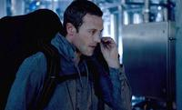
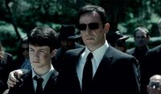
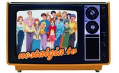
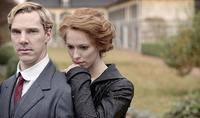
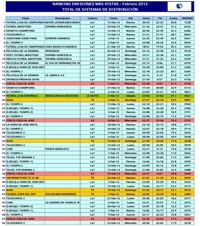

Wed, 07 Mar 2012 12:13:30 GMT
'NYC 22', tráiler de la última bala de la CBS esta temporada
'NYC 22', tráiler de la última bala de la CBS esta temporada
La CBS fue, de las grandes networks, la que menos series encargó para esta temporada, y aún le queda una por estrenar. Se trata de ‘NYC 22‘ (antes llamada ‘The 2-2’) y llegará a la cadena del ojo el próximo 15 de abril. Sustituirá a ‘CSI: Miami’, que termina ya su temporada, con un tema similar pero con un enfoque drásticamente opuesto. ‘NYC 22‘ es un drama con mucha comedia que sigue a seis novatos del Departamento de Policía de Nueva York mientras patrullan por las calles de Manhattan. Evidentemente de aquí no va a salir un ‘The Chicago Code’, ni tan siquiera un ‘Southland’ por su parecido argumental. Atendiendo a lo que nos ofrece el tráiler, parece más orientado a lo que ya nos ofrece ‘Rookie Blue’, la serie veraniega de la ABC que pronto estrenará su tercera temporada. En el tráiler hacen mucho más hincapié en la parte cómica que en el drama, aunque sí vemos varias escenas que nos indican que habrá acción, explosiones y mamporros por todas partes. No obstante, lo más destacado de ‘NYC 22’ se encuentra detrás de las cámaras, con Robert de Niro (‘Toro Salvaje’, ‘El Padrino’) en la producción y Richard Price (‘The Wire’) como creador y guionista. Quizá esto último sea un aliciente para muchos a la hora de darle una oportunidad a la serie, pero un estreno que llega a poco más de un mes del final de la temporada, y simplemente para ripiar el hueco dejado por otra no da demasiada confianza. No es, desde luego, el mejor momento para atraer a la audiencia, y de renovación ya ni hablamos. En ¡Vaya Tele! | Otoño 2011: Nuevas series CBS
La CBS fue, de las grandes networks, la que menos series encargó para esta temporada, y aún le queda una por estrenar. Se trata de ‘NYC 22‘ (antes llamada ‘The 2-2’) y llegará a la cadena del ojo el próximo 15 de abril. Sustituirá a ‘CSI: Miami’, que termina ya su temporada, con un tema similar pero con un enfoque drásticamente opuesto. ‘NYC 22‘ es un drama con mucha comedia que sigue a seis novatos del Departamento de Policía de Nueva York mientras patrullan por las calles de Manhattan.
Evidentemente de aquí no va a salir un ‘The Chicago Code’, ni tan siquiera un ‘Southland’ por su parecido argumental. Atendiendo a lo que nos ofrece el tráiler, parece más orientado a lo que ya nos ofrece ‘Rookie Blue’, la serie veraniega de la ABC que pronto estrenará su tercera temporada. En el tráiler hacen mucho más hincapié en la parte cómica que en el drama, aunque sí vemos varias escenas que nos indican que habrá acción, explosiones y mamporros por todas partes.
No obstante, lo más destacado de ‘NYC 22’ se encuentra detrás de las cámaras, con Robert de Niro (‘Toro Salvaje’, ‘El Padrino’) en la producción y Richard Price (‘The Wire’) como creador y guionista. Quizá esto último sea un aliciente para muchos a la hora de darle una oportunidad a la serie, pero un estreno que llega a poco más de un mes del final de la temporada, y simplemente para ripiar el hueco dejado por otra no da demasiada confianza. No es, desde luego, el mejor momento para atraer a la audiencia, y de renovación ya ni hablamos.
En ¡Vaya Tele! | Otoño 2011: Nuevas series CBS

Tue, 06 Mar 2012 19:00:06 GMT
El valor de la segunda pantalla (y de la tercera, y de la cuarta…)
El valor de la segunda pantalla (y de la tercera, y de la cuarta…)
Cuando hablamos de “segunda pantalla”, solemos referirnos a un aparato electrónico que hace que los espectadores de televisión interactúen con lo que están viendo en la pantalla principal (la del televisor). Pero es que lo que vi el otro día en el vídeo de encima de estas líneas me dejó impresionado: un futuro en el que absolutamente todo está repleto de pantallas de cristal. Algunos pensaréis que es demasiado, otros que a ver si no se demora y llega pronto (yo soy de éstos últimos) pero lo que es indudable es que estamos abrumados por pantallas. Es una auténtica avalancha. Levanto la cabeza de mi ordenador y veo, además de ésta, la de la televisión, la del móvil y la del iPad. ¡Cuatro pantallas en menos de diez metros! Y todas “inteligentes” (si es que se puede llamar así a un objeto inerte). Personalmente, empiezo a considerar la segunda pantalla cuando veo la televisión como algo que va absolutamente pegado a su consumo y, si no la tengo, como que me falta algo. De hecho, en muchos momentos es mucho más interesante lo que descubro en mi móvil que lo que veo en televisión. Mejora la interactividad, puedo tener una experiencia de consumo más enriquecedora, el contenido exclusivo es valorado altamente, me gusta ver la opinión de los demás en directo… Y es que no sólo de check-ins vive el geek. Antena 3 lanzó hace unos días su aplicación para que los espectadores puedan obtener contenido de valor añadido a través de sus móviles iPhone y Android mientras ven determinado programa. En Miso se han creado los `Sideshows´, mediante los cuales las marcas pueden crear experiencias en torno al programa o serie que se está emitiendo. Citas interesantes, preguntas, contenido que apunte a terceros, anuncios, hashtags patrocinados… También los propios usuarios pueden alojar su propio contenido. GetGlue dio stickers exclusivos a quienes hiceron check-in en la alfombra roja de la gala de los Oscars o durante el desarrollo del evento. Las segundas pantallas están haciendo que ver la televisión sea más interactivo, hiperconectado y social que nunca. ¿Os imagináis una educación con esta tecnología? Si incorporan todas las pantallas que se ven en este segundo vídeo a la enseñanza universitaria prometo volver a matricularme en algo. Ya pensaré en qué pero eso no me lo pierdo. En ¡Vaya Tele! | Y el Goya al mejor tweet es para… En ¡Vaya Tele! | Desde mi sofá
Cuando hablamos de “segunda pantalla”, solemos referirnos a un aparato electrónico que hace que los espectadores de televisión interactúen con lo que están viendo en la pantalla principal (la del televisor). Pero es que lo que vi el otro día en el vídeo de encima de estas líneas me dejó impresionado: un futuro en el que absolutamente todo está repleto de pantallas de cristal.
Algunos pensaréis que es demasiado, otros que a ver si no se demora y llega pronto (yo soy de éstos últimos) pero lo que es indudable es que estamos abrumados por pantallas. Es una auténtica avalancha. Levanto la cabeza de mi ordenador y veo, además de ésta, la de la televisión, la del móvil y la del iPad. ¡Cuatro pantallas en menos de diez metros! Y todas “inteligentes” (si es que se puede llamar así a un objeto inerte).
Personalmente, empiezo a considerar la segunda pantalla cuando veo la televisión como algo que va absolutamente pegado a su consumo y, si no la tengo, como que me falta algo. De hecho, en muchos momentos es mucho más interesante lo que descubro en mi móvil que lo que veo en televisión. Mejora la interactividad, puedo tener una experiencia de consumo más enriquecedora, el contenido exclusivo es valorado altamente, me gusta ver la opinión de los demás en directo…
Y es que no sólo de check-ins vive el geek. Antena 3 lanzó hace unos días su aplicación para que los espectadores puedan obtener contenido de valor añadido a través de sus móviles iPhone y Android mientras ven determinado programa. En Miso se han creado los `Sideshows´, mediante los cuales las marcas pueden crear experiencias en torno al programa o serie que se está emitiendo. Citas interesantes, preguntas, contenido que apunte a terceros, anuncios, hashtags patrocinados… También los propios usuarios pueden alojar su propio contenido. GetGlue dio stickers exclusivos a quienes hiceron check-in en la alfombra roja de la gala de los Oscars o durante el desarrollo del evento.
Las segundas pantallas están haciendo que ver la televisión sea más interactivo, hiperconectado y social que nunca. ¿Os imagináis una educación con esta tecnología? Si incorporan todas las pantallas que se ven en este segundo vídeo a la enseñanza universitaria prometo volver a matricularme en algo. Ya pensaré en qué pero eso no me lo pierdo.
En ¡Vaya Tele! | Y el Goya al mejor tweet es para…
En ¡Vaya Tele! | Desde mi sofá
Tue, 06 Mar 2012 11:00:00 GMT
'Common Law', otra serie de polis para USA Network
'Common Law', otra serie de polis para USA Network
‘Common Law’ es la nueva serie del canal USA Network para la última parte del curso y verano. El 11 de mayo comenzarán las emisiones de la primera temporada de esta ficción que se emitirá tras ‘Fairly Legal’. Se trata de otra serie de policías que el canal de cable básico USA Network saca, siguiendo el patrón de muchas de sus otras series que, de verdad, parecen clones las unas de las otras. En esta ocasión veremos a una pareja disfuncional de policías, que interpretan Michael Ealy y Warren Kole, que entre caso y caso deberán asistir a terapia de pareja con una psicóloga interpretada por Sonya Walger (a la que recordaremos siempre como Penny de ‘Perdidos’). A mí original no me suena, y menos viendo el trailer de la serie y cómo interactúan el uno con el otro. Pero las series de USA Network son así y nadie espera que se saquen de la manga una obra digna de HBO. Lo suyo son series correctas, amenas y de fácil consumo, y no les va nada mal dicho sea de paso. Si consiguen atrapar a la audiencia con una pareja con química, casos de poca monta y una premisa simple, bien por ellos. Pero a mí me da pereza darle siquiera una oportunidad. La serie comenzará cuando la temporada regular de series ya está dando sus últimos coletazos para entrar de lleno en el verano, donde este canal suele hacerse fuerte. Vía | Hollywood Reporter En ¡Vaya Tele! | Cuatro razones para ver ‘Suits’
‘Common Law’ es la nueva serie del canal USA Network para la última parte del curso y verano. El 11 de mayo comenzarán las emisiones de la primera temporada de esta ficción que se emitirá tras ‘Fairly Legal’. Se trata de otra serie de policías que el canal de cable básico USA Network saca, siguiendo el patrón de muchas de sus otras series que, de verdad, parecen clones las unas de las otras.
En esta ocasión veremos a una pareja disfuncional de policías, que interpretan Michael Ealy y Warren Kole, que entre caso y caso deberán asistir a terapia de pareja con una psicóloga interpretada por Sonya Walger (a la que recordaremos siempre como Penny de ‘Perdidos’). A mí original no me suena, y menos viendo el trailer de la serie y cómo interactúan el uno con el otro.
Pero las series de USA Network son así y nadie espera que se saquen de la manga una obra digna de HBO. Lo suyo son series correctas, amenas y de fácil consumo, y no les va nada mal dicho sea de paso. Si consiguen atrapar a la audiencia con una pareja con química, casos de poca monta y una premisa simple, bien por ellos. Pero a mí me da pereza darle siquiera una oportunidad. La serie comenzará cuando la temporada regular de series ya está dando sus últimos coletazos para entrar de lleno en el verano, donde este canal suele hacerse fuerte.
Vía | Hollywood Reporter
En ¡Vaya Tele! | Cuatro razones para ver ‘Suits’
Tue, 06 Mar 2012 07:18:10 GMT
Fox cancela 'Terra Nova'
Fox cancela 'Terra Nova'
Casi era la crónica de una muerte anunciada. Si quería renovar ‘Terra Nova‘ por una segunda temporada, Fox tendría que haberlo anunciado hace varias semanas, para dar tiempo al equipo de la serie a iniciar el rodaje con la suficiente antelación para tener listos los capítulos antes del mes de septiembre, pero la falta de noticias, en este caso, sí implicaba malas noticias. Finalmente, la serie ha sido cancelada después de una primera temporada que terminó en diciembre con unas audiencias que, sin ser especialmente malas, no eran todo lo buenas que Fox esperaba para una serie tan costosa y, a priori, tan ambiciosa. ‘Terra Nova’ fue perdiendo poco a poco el favor del público, después de haber sido uno de los estrenos con mejores audiencia del otoño. El tono demasiado ligero y poco inspirado, a pesar de que tuvo algunos destellos de que, si los guionistas, la serie podía ser más entretenida, probablemente tuvo algo que ver con esa pérdida de interés por parte de los espectadores. Con esta cancelación, Fox todavía tiene que decidir el futuro de otro de sus estrenos de este año, ‘Alcatraz‘, cuyas audiencias tampoco están siendo buenas en las últimas semanas y que, de hecho, parece dirigirse inexorablemente también hacia la cancelación. Así las cosas, no es ninguna sorpresa que la cadena haya decidido lanzar toda su maquinaria promocional detrás de ‘Touch‘, que tuvo buena acogida en su preestreno en enero y que se estrenará el 22 de marzo aprovechando el lead in de ‘American Idol‘, el mejor que Fox puede darle. La serie de Kiefer Sutherland es, ahora mismo, la única esperanza de que algunos de los estrenos del canal de esta temporada sea un éxito, y el año que viene veremos, seguramente, muchas caras nuevas en la parrilla de Fox. Y sí, hay rumores de que sus productores van a ofrecer ‘Terra Nova’ a otras cadenas, pero yo no me haría muchas ilusiones. Vía | TV Line En ¡Vaya Tele! | ¿Llegará ‘Terra Nova’ a tener segunda temporada?

Casi era la crónica de una muerte anunciada. Si quería renovar ‘Terra Nova‘ por una segunda temporada, Fox tendría que haberlo anunciado hace varias semanas, para dar tiempo al equipo de la serie a iniciar el rodaje con la suficiente antelación para tener listos los capítulos antes del mes de septiembre, pero la falta de noticias, en este caso, sí implicaba malas noticias. Finalmente, la serie ha sido cancelada después de una primera temporada que terminó en diciembre con unas audiencias que, sin ser especialmente malas, no eran todo lo buenas que Fox esperaba para una serie tan costosa y, a priori, tan ambiciosa.
‘Terra Nova’ fue perdiendo poco a poco el favor del público, después de haber sido uno de los estrenos con mejores audiencia del otoño. El tono demasiado ligero y poco inspirado, a pesar de que tuvo algunos destellos de que, si los guionistas, la serie podía ser más entretenida, probablemente tuvo algo que ver con esa pérdida de interés por parte de los espectadores. Con esta cancelación, Fox todavía tiene que decidir el futuro de otro de sus estrenos de este año, ‘Alcatraz‘, cuyas audiencias tampoco están siendo buenas en las últimas semanas y que, de hecho, parece dirigirse inexorablemente también hacia la cancelación.
Así las cosas, no es ninguna sorpresa que la cadena haya decidido lanzar toda su maquinaria promocional detrás de ‘Touch‘, que tuvo buena acogida en su preestreno en enero y que se estrenará el 22 de marzo aprovechando el lead in de ‘American Idol‘, el mejor que Fox puede darle. La serie de Kiefer Sutherland es, ahora mismo, la única esperanza de que algunos de los estrenos del canal de esta temporada sea un éxito, y el año que viene veremos, seguramente, muchas caras nuevas en la parrilla de Fox. Y sí, hay rumores de que sus productores van a ofrecer ‘Terra Nova’ a otras cadenas, pero yo no me haría muchas ilusiones.
Vía | TV Line
En ¡Vaya Tele! | ¿Llegará ‘Terra Nova’ a tener segunda temporada?
Mon, 05 Mar 2012 16:01:31 GMT
HBO nos enseña 'Girls' en un nuevo trailer
HBO nos enseña 'Girls' en un nuevo trailer
Las cadenas de cable estadounidenses van a su ritmo, saben que la audiencia no es tan importante en sus producciones y no se dejan llevar por el calendario habitual del resto de cadenas, las cuales viven por y para los anunciantes y los datos de audiencia semanales. Un ejemplo claro de esta tranquilidad e independencia es la HBO, que se atreve a sacar trailers de sus series dos meses antes de que se estrenen, en esta ocasión se trata de ‘Girls‘. La serie, de la que ya os hablamos, se estrenará en abril y nos contará la vida de un grupo de mujeres de veintipocos que buscan ser, de alguna manera, alguien en la vida a través de los obstáculos que le ponen, tanto los que están a su alrededor como ellas mismas. Parce que ‘Girls‘ va a girar alrededor del personaje de Lena Dunham y tendrá mucho de lo que tiene normalmente HBO en este tipo de series, bromas fuera de tono, situaciones que te dan vergüenza ajena y, como no, sexo sin complejos donde se enseña la ración de carne que toda serie de cable debe tener. A mí este trailer me ha hecho despertar un interés que no tenía en un principio, ya que parece que va a ser una serie interesante y que no se va a parecer a ‘Sexo en Nueva York’ como se andaba diciendo. Vía | Huffington Post En ¡Vaya Tele! | ‘Girls’ y ‘Veep’, mujeres al frente de HBO en abril de 2012
Las cadenas de cable estadounidenses van a su ritmo, saben que la audiencia no es tan importante en sus producciones y no se dejan llevar por el calendario habitual del resto de cadenas, las cuales viven por y para los anunciantes y los datos de audiencia semanales. Un ejemplo claro de esta tranquilidad e independencia es la HBO, que se atreve a sacar trailers de sus series dos meses antes de que se estrenen, en esta ocasión se trata de ‘Girls‘.
La serie, de la que ya os hablamos, se estrenará en abril y nos contará la vida de un grupo de mujeres de veintipocos que buscan ser, de alguna manera, alguien en la vida a través de los obstáculos que le ponen, tanto los que están a su alrededor como ellas mismas.
Parce que ‘Girls‘ va a girar alrededor del personaje de Lena Dunham y tendrá mucho de lo que tiene normalmente HBO en este tipo de series, bromas fuera de tono, situaciones que te dan vergüenza ajena y, como no, sexo sin complejos donde se enseña la ración de carne que toda serie de cable debe tener. A mí este trailer me ha hecho despertar un interés que no tenía en un principio, ya que parece que va a ser una serie interesante y que no se va a parecer a ‘Sexo en Nueva York’ como se andaba diciendo.
Vía | Huffington Post
En ¡Vaya Tele! | ‘Girls’ y ‘Veep’, mujeres al frente de HBO en abril de 2012
Mon, 05 Mar 2012 10:04:21 GMT
Sugerencias Semanales | Del 5 al 11 de marzo
Sugerencias Semanales | Del 5 al 11 de marzo
Primer lunes de marzo, las lluvias empiezan a llegar en algunos puntos y comenzamos una semana tranquila televisivamente hablando. Bienvenidos una semana más a las Sugerencias Semanales, la sección en la que intentamos recomendar y comentar lo más destacado de lo que se emitirá esta semana en televisión. Y ¿qué hay esta semana? pues la verdad es que las parrillas de invierno están ya asentadas desde hace semanas y hay poca novedad, sobre todo en la televisión patria. Hoy Telecinco estrena, en su línea “biopics para generar polémicas que alimente nuestra programación durante un trimestre”, ‘Mi gitana‘ la tv movie de tres partes que retratará la vida, escándalos inclusive, de Isabel Pantoja. Como alternativas tenemos el reestreno en Divinity de ‘Revenge‘, que ayer debutó en Telecinco y bueno, al contrario que otros días hay mucha oferta: los nuevos episodios de ‘Sons of Anarchy‘ en Energy, ‘El mentalista‘ en laSexta, ‘Los Lunes al Sol’ en Nova, la última revisitación de ‘Arséne Lupin’ en La 2… Martes y miércoles tendremos lo de siempre, más o menos: ‘Toledo’, ‘Tú sí que vales’… la noche del miércoles yo os recomendaria ver el documental ‘Bicicleta, cuchara, manzana‘ en La 2 o, si tenéis ganas de algo palomitero y divertido, ‘Resacón en las Vegas’ en laSexta. El jueves nos encontramos con uno de esos estrenos largamente postergados por Antena 3 (aún recuerdo cuando la empezaron a promocionar e incluso preestrenar en cines en septiembre). Sí amigos a las 22.30 podremos ver la tercera y última temporada de ‘Los Protegidos‘, subtitulada ‘El Origen’. También el jueves, y en MTV, se estrena una nueva serie animada: ‘Crash Canyon‘ Yéndonos al terreno del cable ese mismo jueves Paramount Comedy estrena la sexta temporada de ‘Reglas de Compromiso’. El viernes TNT emite el episodio número 100 de ‘The Big Bang Theory’, por lo que ha organizado el I Torneo Universitario de Piedra Papel Tijera Lagarto Spock en la Facultad de Comunicación de la Universidad Complutense de Madrid. Puede ser una buena experiencia si os pilla cerca. En cuanto a la programación internacional esta semana tenemos varios finales, de series bastante discretas como el de ‘The Lying Game’ el lunes y ‘Jane by Design’ el martes (este es el final de media temporada, si no me equivoco). El martes además se estrenará la segunda temporada de ‘Breaking In‘ (¿por qué?) en FOX y el miércoles el de la segunda de ‘Happily Divorced’ en TVLand. Aunque quizás lo más importante sea el final de la cuarta temporada de ‘Star Wars: The Clone Wars‘ en Cartoon Network. Mientras tanto en el terreno deportivo tendremos los partidos de vuelta de los Octavos de Final tanto de la Champions League como de la Europa League. El martes La 1 emitirá el Arsenal – Milán y el miércoles el Barcelona vs Bayer Leverkusen en autonómicas. Y para redondear la semana en Canal + este fin de semana se emite la cuarta jornada del Torneo Seis Naciones de rugby. PD. Si andais perdidos al mediodía en Neox están volviendo a echar ‘Scrubs’ desde el principio. En ¡Vaya Tele! | Sugerencias Semanales

Primer lunes de marzo, las lluvias empiezan a llegar en algunos puntos y comenzamos una semana tranquila televisivamente hablando. Bienvenidos una semana más a las Sugerencias Semanales, la sección en la que intentamos recomendar y comentar lo más destacado de lo que se emitirá esta semana en televisión. Y ¿qué hay esta semana? pues la verdad es que las parrillas de invierno están ya asentadas desde hace semanas y hay poca novedad, sobre todo en la televisión patria.
Hoy Telecinco estrena, en su línea “biopics para generar polémicas que alimente nuestra programación durante un trimestre”, ‘Mi gitana‘ la tv movie de tres partes que retratará la vida, escándalos inclusive, de Isabel Pantoja. Como alternativas tenemos el reestreno en Divinity de ‘Revenge‘, que ayer debutó en Telecinco y bueno, al contrario que otros días hay mucha oferta: los nuevos episodios de ‘Sons of Anarchy‘ en Energy, ‘El mentalista‘ en laSexta, ‘Los Lunes al Sol’ en Nova, la última revisitación de ‘Arséne Lupin’ en La 2…
Martes y miércoles tendremos lo de siempre, más o menos: ‘Toledo’, ‘Tú sí que vales’… la noche del miércoles yo os recomendaria ver el documental ‘Bicicleta, cuchara, manzana‘ en La 2 o, si tenéis ganas de algo palomitero y divertido, ‘Resacón en las Vegas’ en laSexta. El jueves nos encontramos con uno de esos estrenos largamente postergados por Antena 3 (aún recuerdo cuando la empezaron a promocionar e incluso preestrenar en cines en septiembre). Sí amigos a las 22.30 podremos ver la tercera y última temporada de ‘Los Protegidos‘, subtitulada ‘El Origen’. También el jueves, y en MTV, se estrena una nueva serie animada: ‘Crash Canyon‘
Yéndonos al terreno del cable ese mismo jueves Paramount Comedy estrena la sexta temporada de ‘Reglas de Compromiso’. El viernes TNT emite el episodio número 100 de ‘The Big Bang Theory’, por lo que ha organizado el I Torneo Universitario de Piedra Papel Tijera Lagarto Spock en la Facultad de Comunicación de la Universidad Complutense de Madrid. Puede ser una buena experiencia si os pilla cerca.
En cuanto a la programación internacional esta semana tenemos varios finales, de series bastante discretas como el de ‘The Lying Game’ el lunes y ‘Jane by Design’ el martes (este es el final de media temporada, si no me equivoco). El martes además se estrenará la segunda temporada de ‘Breaking In‘ (¿por qué?) en FOX y el miércoles el de la segunda de ‘Happily Divorced’ en TVLand. Aunque quizás lo más importante sea el final de la cuarta temporada de ‘Star Wars: The Clone Wars‘ en Cartoon Network.
Mientras tanto en el terreno deportivo tendremos los partidos de vuelta de los Octavos de Final tanto de la Champions League como de la Europa League. El martes La 1 emitirá el Arsenal – Milán y el miércoles el Barcelona vs Bayer Leverkusen en autonómicas. Y para redondear la semana en Canal + este fin de semana se emite la cuarta jornada del Torneo Seis Naciones de rugby.
PD. Si andais perdidos al mediodía en Neox están volviendo a echar ‘Scrubs’ desde el principio.
En ¡Vaya Tele! | Sugerencias Semanales
Sun, 04 Mar 2012 18:28:44 GMT
Edición USA: 'Awake' patina en su estreno, FOX apuesta por 'Touch' y condena a 'The Finder', y más
Edición USA: 'Awake' patina en su estreno, FOX apuesta por 'Touch' y condena a 'The Finder', y más
Un domingo más, aquí estamos con nuestra sección Edición USA dedicada a repasar lo más relevante de la parrilla y de las audiencias que nos llegan desde el otro lado del Atlántico. La midseason ya está bastante avanzada y se nota que algunas cadenas ya comienzan a hacer pruebas y a planificar la temporada que viene. No sería de extrañar que durante los próximos días veamos algún que otro experimento más. En esta semana que hoy termina, una de las carreras de la NASCAR se retrasó más de la cuenta y, como consecuencia, FOX no emitió programación original el lunes. Aprovechando el desaguisado, la cadena ha decidido ajustar mejor su parrilla y ha hecho cambios bastante significativos, como explicamos a continuación. Además, se han hecho públicos datos interesantes de la audiencia de febrero y la CW ha anunciado sus planes de fin de temporada.
FOX apuesta por ‘Touch’ y condena a ‘The Finder’ Importante el cambio que FOX ha preparado en su parrilla de cara a proteger y potenciar su más preciado tesoro, ‘Touch‘. La serie, protagonizada por Kiefer Sutherland, se estrenará el próximo jueves 22 de marzo con ‘American Idol’ como lead-in. La idea es, después del éxito que tuvo su piloto, ofrecerle la mejor franja horaria que actualmente tiene la cadena. Actualmente, ese era el hueco que utilizaba (y desaprovechaba) ‘The Finder’ y que supuestamente iba a ocupar ‘Bones’ en su regreso. Entonces, ¿qué pasa con ‘The Finder‘? Pues que, debido a sus malos resultados, pasará a ocupar la franja anterior a ‘Fringe’ los viernes. El spin-off de ‘Bones’ que no es tal no ha terminado de funcionar. Tiene los días contados, y este movimiento de la FOX no hace más que confirmarlo. Salvo excepciones, y como habitualmente decimos, las series van a los viernes “a morir”. No le cojáis cariño a esta serie porque va por el mismo camino. ¿Y con ‘Bones’? Actualmente está de parón, pero volverá el 2 de abril a una nueva noche: los lunes a las 8.00h, desplazando a ‘House’ hasta las 9.00h hasta final de temporada. ‘Bones’ ya ha demostrado en el pasado que casi cualquier horario le viene bien (hasta los viernes en la que decidieron ubicarla una temporada). ¿Será también una prueba para la serie de Hart Hanson de cada a ubicarla en la misma noche el año que viene? No lo descartaría. La CW anuncia las fechas de final de temporada de sus series Mientras algunas cadenas anuncian cambios, otras confirman que no habrá grandes novedades en su parrilla desde aquí hasta final de temporada. La CW, por ejemplo, acaba de anunciar las fechas de las season finale de sus series. Lo más destacable de todo quizás es el hecho de que ‘Ringer‘ vaya a terminar relativamente pronto, en abril. Esto significa que la serie no tendrá semanas de descanso ni parones hasta final de temporada. ¿Qué lectura le podemos sacar a esto? Pues que la CW quiere quitársela de encima cuanto antes (bastante posible viendo las cifras) o que aún espera que la audiencia no se siga desplomando (de ahí a que eviten tenerla fuera de parrilla). Sea lo que sea, lo cierto es que no pinta nada bien el futuro de ‘Ringer’. Todo le funciona a la CBS Cuando decimos que a la CBS le suele funcionar cualquier cosa, no es algo que se diga por decir, sino que es lo que suele suceder en realidad. Un ejemplo claro lo tuvimos el pasado jueves, cuando la cadena emitió reposiciones de casi todas sus series estrella. ¿El resultado? Éxito absoluto. ‘The Big Bang Theory’ consiguió 11.11 millones (3.2 en la demo), frente a ’30 Rock’ que a pesar de todo no consiguió pasar de 3.77 millones de espectadores. Lo mismo sucedió a las 9 de la noche, con ‘Person Of Interest‘ llevándose el título de lo más visto con sus 9.47 millones, frente a otra reposición de ‘Anatomía de Grey’ (3.44 millones, se confirma que no es una serie que repita bien) y una ‘The Office’ que no es ni la sombra de lo que en su día fue (apenas 5 millones y 2.5 en la demo). Debe ser muy frustrante no conseguir derrotar a una cadena en una noche en la que el único episodio original que emitió fue el de ‘Rob’. Pero la NBC patina con ‘Awake’ En el lado opuesto de la CBS tenemos a la NBC, la cadena en la que casi nada funciona por mucho empeño que le pongan. Esta semana era importante para la cadena de peacock por el estreno de ‘Awake’, uno de los dramas que más prometían pero en el que no confiaban demasiado. Escogieron una noche a priori favorable, con reposiciones de la CBS, pero como se ha demostrado tampoco les fue demasiado bien. El piloto consiguió 6.24 millones, con 2.0 en la demo (competía con ‘The Mentalist’, que se llevó 8.87 millones y 1.7). No es una cifra exageradamente mala, pero teniendo en cuenta que la ABC también emitió reposiciones y que la semana que viene seguramente ya no contará con el “factor estreno” y la audiencia descenderá peligrosamente, tampoco es para celebrarlo. Habrá que ver si estabiliza pronto o hasta qué datos sigue cayendo, pero seguramente los jefazos de la NBC no estén del todo convencidos con el resultado.
USA Network, la cadena de cable básico más vista de febrero Si bien la NBC está sufriendo, una de sus cadenas de cable hermanas, USA Network, está en mejor forma que nunca. Se ha proclamado la más vista de febrero de este año en el cable básico (vamos, que no entran cadenas premium como HBO o Showtime). ¿Las culpables del éxito? ‘Royal Pains’, ‘White Collar’ y las reposiciones de ‘NCIS’ y ‘Law & Order: SVU’, otra prueba más de la importancia de la sindicación. En ¡Vaya Tele! | Edición USA

Un domingo más, aquí estamos con nuestra sección Edición USA dedicada a repasar lo más relevante de la parrilla y de las audiencias que nos llegan desde el otro lado del Atlántico. La midseason ya está bastante avanzada y se nota que algunas cadenas ya comienzan a hacer pruebas y a planificar la temporada que viene. No sería de extrañar que durante los próximos días veamos algún que otro experimento más.
En esta semana que hoy termina, una de las carreras de la NASCAR se retrasó más de la cuenta y, como consecuencia, FOX no emitió programación original el lunes. Aprovechando el desaguisado, la cadena ha decidido ajustar mejor su parrilla y ha hecho cambios bastante significativos, como explicamos a continuación. Además, se han hecho públicos datos interesantes de la audiencia de febrero y la CW ha anunciado sus planes de fin de temporada.
FOX apuesta por ‘Touch’ y condena a ‘The Finder’
Importante el cambio que FOX ha preparado en su parrilla de cara a proteger y potenciar su más preciado tesoro, ‘Touch‘. La serie, protagonizada por Kiefer Sutherland, se estrenará el próximo jueves 22 de marzo con ‘American Idol’ como lead-in. La idea es, después del éxito que tuvo su piloto, ofrecerle la mejor franja horaria que actualmente tiene la cadena. Actualmente, ese era el hueco que utilizaba (y desaprovechaba) ‘The Finder’ y que supuestamente iba a ocupar ‘Bones’ en su regreso.
Entonces, ¿qué pasa con ‘The Finder‘? Pues que, debido a sus malos resultados, pasará a ocupar la franja anterior a ‘Fringe’ los viernes. El spin-off de ‘Bones’ que no es tal no ha terminado de funcionar. Tiene los días contados, y este movimiento de la FOX no hace más que confirmarlo. Salvo excepciones, y como habitualmente decimos, las series van a los viernes “a morir”. No le cojáis cariño a esta serie porque va por el mismo camino.
¿Y con ‘Bones’? Actualmente está de parón, pero volverá el 2 de abril a una nueva noche: los lunes a las 8.00h, desplazando a ‘House’ hasta las 9.00h hasta final de temporada. ‘Bones’ ya ha demostrado en el pasado que casi cualquier horario le viene bien (hasta los viernes en la que decidieron ubicarla una temporada). ¿Será también una prueba para la serie de Hart Hanson de cada a ubicarla en la misma noche el año que viene? No lo descartaría.
La CW anuncia las fechas de final de temporada de sus series
Mientras algunas cadenas anuncian cambios, otras confirman que no habrá grandes novedades en su parrilla desde aquí hasta final de temporada. La CW, por ejemplo, acaba de anunciar las fechas de las season finale de sus series. Lo más destacable de todo quizás es el hecho de que ‘Ringer‘ vaya a terminar relativamente pronto, en abril. Esto significa que la serie no tendrá semanas de descanso ni parones hasta final de temporada.
¿Qué lectura le podemos sacar a esto? Pues que la CW quiere quitársela de encima cuanto antes (bastante posible viendo las cifras) o que aún espera que la audiencia no se siga desplomando (de ahí a que eviten tenerla fuera de parrilla). Sea lo que sea, lo cierto es que no pinta nada bien el futuro de ‘Ringer’.
Todo le funciona a la CBS
Cuando decimos que a la CBS le suele funcionar cualquier cosa, no es algo que se diga por decir, sino que es lo que suele suceder en realidad. Un ejemplo claro lo tuvimos el pasado jueves, cuando la cadena emitió reposiciones de casi todas sus series estrella. ¿El resultado? Éxito absoluto. ‘The Big Bang Theory’ consiguió 11.11 millones (3.2 en la demo), frente a ’30 Rock’ que a pesar de todo no consiguió pasar de 3.77 millones de espectadores.
Lo mismo sucedió a las 9 de la noche, con ‘Person Of Interest‘ llevándose el título de lo más visto con sus 9.47 millones, frente a otra reposición de ‘Anatomía de Grey’ (3.44 millones, se confirma que no es una serie que repita bien) y una ‘The Office’ que no es ni la sombra de lo que en su día fue (apenas 5 millones y 2.5 en la demo). Debe ser muy frustrante no conseguir derrotar a una cadena en una noche en la que el único episodio original que emitió fue el de ‘Rob’.
Pero la NBC patina con ‘Awake’
En el lado opuesto de la CBS tenemos a la NBC, la cadena en la que casi nada funciona por mucho empeño que le pongan. Esta semana era importante para la cadena de peacock por el estreno de ‘Awake’, uno de los dramas que más prometían pero en el que no confiaban demasiado. Escogieron una noche a priori favorable, con reposiciones de la CBS, pero como se ha demostrado tampoco les fue demasiado bien.

El piloto consiguió 6.24 millones, con 2.0 en la demo (competía con ‘The Mentalist’, que se llevó 8.87 millones y 1.7). No es una cifra exageradamente mala, pero teniendo en cuenta que la ABC también emitió reposiciones y que la semana que viene seguramente ya no contará con el “factor estreno” y la audiencia descenderá peligrosamente, tampoco es para celebrarlo. Habrá que ver si estabiliza pronto o hasta qué datos sigue cayendo, pero seguramente los jefazos de la NBC no estén del todo convencidos con el resultado.
USA Network, la cadena de cable básico más vista de febrero
Si bien la NBC está sufriendo, una de sus cadenas de cable hermanas, USA Network, está en mejor forma que nunca. Se ha proclamado la más vista de febrero de este año en el cable básico (vamos, que no entran cadenas premium como HBO o Showtime). ¿Las culpables del éxito? ‘Royal Pains’, ‘White Collar’ y las reposiciones de ‘NCIS’ y ‘Law & Order: SVU’, otra prueba más de la importancia de la sindicación.
En ¡Vaya Tele! | Edición USA
Sun, 04 Mar 2012 08:00:00 GMT
'La Familia Crece', Nostalgia TV
'La Familia Crece', Nostalgia TV
Corría septiembre del año 1998 y los chavales de la época nos sentábamos en el suelo en torno al televisor; con el bocata de lo que fuera para ver las míticas tardes de programación infantil de La 2. Un buen día la cadena estrenó una serie que nos descolocó a la gran mayoría de los ahí presentes. No era nada parecido a lo que estábamos acostumbrados. Sí, eran dibujos japoneses (todavía llamábamos así al anime), pero era la antítesis de otros como ‘Campeones’; era algo que no habíamos visto: ‘La familia Crece‘. ‘La Familia Crece’ (‘Marmalade Boy’, ママレード・ボーイ) es un anime basado en el manga homónimo de Wataru Yoshizumi, que constó de 76 episodios de unos 24 minutos de duración. La serie se produjo y emitió originalmente en Japón entre marzo de 1994 y septiembre de 1995 y se estrenó en España en septiembre de 1998. La 2 la programó dentro del bloque Hyakutake acompañando a otro espacio mítico, ‘El Chavo del Ocho’. El shojo de una generación en España ‘La familia crece’ es una comedia romántica que está protagonizada por Miki, una chica bastante desenfadada y sencilla cuyos padres, que llegan un día de vacaciones en Hawaii, anuncian que han conocido a una pareja encantadora allí y han decidido intercambiarse las parejas y vivir todos juntos bajo el mismo techo. Una noticia que, como os podréis imaginar, no sienta nada bien a Miki. Eso hasta que ve que el hijo de la otra pareja, Yuu (algo misterioso y reservado), es bastante atractivo. Los dos comienzan una relación de amistad abocada hacia una romántica; pero el daño que les hicieron sus respectivas exparejas hacen que sean muy cautos en su relación. Relación que se verá complicada, además, por terceras personas. Así pues ‘La familia crece’ es un shojo, literalmente un anime “para chicas” (los japoneses son los reyes del target). Uno de los primeros animes de este corte en ser seguidos por toda una generación de jóvenes españoles, por eso yo lo considero el primer gran shojo que destacó en una parrilla repleta de shonens (‘Dragon Ball’, ‘Campeones’…) De hecho conozco a muy pocas personas que eran niños/preadolescentes en la época que no haya visto ‘La familia crece’. El anime era un auténtico culebrón nipón y como tal enganchaba que daba gusto; además tocaba temas algo controvertidos como la trama de la relación entre una amiga y compañera de Miki, Meiko, con un profesor suyo. Un par de curiosidades de ‘Marmalade Boy’ (‘La Familia Crece’)
En el plan original, Wataru Yoshimuzi quería que Yuu fuera la chica y Miki el chico, con las mismas personalidades (de hecho el título se refería a la personalidad alegre de Miki), pero la editorial, Shueisha, quería que la protagonista fuese la chica. El título ‘Marmalade Boy’ es referenciado por Miki cuando dice que Yuu se parece a la mermelada, con un toque amargo en su interior y apariencia dulce. Originalmente la mangaka quería terminar ‘Marmalade Boy’ desvelando que Yuu y Miki eran hermanos, terminando la historia trágicamente. Pero finalmente cambió la decisión mientras realizaba los últimos capítulos de manga e hizo que fuera un malentendido. Como suele pasar, pronto el anime empezó a separarse de las tramas del manga, con algunos personajes y situaciones que no aparecían en la obra de Yoshizumi.
El anime tuvo una película. Una especie de Capítulo 0 de duración igual que un episodio normal de la serie que narraba, desde el punto de vista de Yuu, cómo acogió la noticia del intercambio de parejas y la primera vez que vio a Miki. Además del anime, ‘Mermelade Boy’ tuvo una adaptación a novela ligera (10 libros) y un dorama taiwanés de 30 episodios. La verdad es que ‘La familia crece’ era un anime que enganchaba: Entretenido, bien realizado, muy para adolescentes y con un toque irresistible de comedia romántica. Sí, supuestamente era un manga “para chicas”, pero eso nunca importó. Recuerdo pocas series de la época que me llamaran tanto la atención (y fijáos que yo no me enganché a ‘Al Salir de Clase’ y sucedáneos) y que me tuviera todas las tardes viendo cómo terminaba la historia de Miki y Yuu. Ficha Técnica: La familia crece
Título Original: Marmalade Boy
Género: Shojo
Cadena: TV Asahi (1994-1995) En España: La 2 (1998-1999)
Disponibilidad DVD: Completa. No en España
En ¡Vaya Tele! | Nostalgia TV

Corría septiembre del año 1998 y los chavales de la época nos sentábamos en el suelo en torno al televisor; con el bocata de lo que fuera para ver las míticas tardes de programación infantil de La 2. Un buen día la cadena estrenó una serie que nos descolocó a la gran mayoría de los ahí presentes. No era nada parecido a lo que estábamos acostumbrados. Sí, eran dibujos japoneses (todavía llamábamos así al anime), pero era la antítesis de otros como ‘Campeones’; era algo que no habíamos visto: ‘La familia Crece‘.
‘La Familia Crece’ (‘Marmalade Boy’, ママレード・ボーイ) es un anime basado en el manga homónimo de Wataru Yoshizumi, que constó de 76 episodios de unos 24 minutos de duración. La serie se produjo y emitió originalmente en Japón entre marzo de 1994 y septiembre de 1995 y se estrenó en España en septiembre de 1998. La 2 la programó dentro del bloque Hyakutake acompañando a otro espacio mítico, ‘El Chavo del Ocho’.
El shojo de una generación en España
‘La familia crece’ es una comedia romántica que está protagonizada por Miki, una chica bastante desenfadada y sencilla cuyos padres, que llegan un día de vacaciones en Hawaii, anuncian que han conocido a una pareja encantadora allí y han decidido intercambiarse las parejas y vivir todos juntos bajo el mismo techo. Una noticia que, como os podréis imaginar, no sienta nada bien a Miki. Eso hasta que ve que el hijo de la otra pareja, Yuu (algo misterioso y reservado), es bastante atractivo.
Los dos comienzan una relación de amistad abocada hacia una romántica; pero el daño que les hicieron sus respectivas exparejas hacen que sean muy cautos en su relación. Relación que se verá complicada, además, por terceras personas. Así pues ‘La familia crece’ es un shojo, literalmente un anime “para chicas” (los japoneses son los reyes del target). Uno de los primeros animes de este corte en ser seguidos por toda una generación de jóvenes españoles, por eso yo lo considero el primer gran shojo que destacó en una parrilla repleta de shonens (‘Dragon Ball’, ‘Campeones’…)
De hecho conozco a muy pocas personas que eran niños/preadolescentes en la época que no haya visto ‘La familia crece’. El anime era un auténtico culebrón nipón y como tal enganchaba que daba gusto; además tocaba temas algo controvertidos como la trama de la relación entre una amiga y compañera de Miki, Meiko, con un profesor suyo.
Un par de curiosidades de ‘Marmalade Boy’ (‘La Familia Crece’)
- En el plan original, Wataru Yoshimuzi quería que Yuu fuera la chica y Miki el chico, con las mismas personalidades (de hecho el título se refería a la personalidad alegre de Miki), pero la editorial, Shueisha, quería que la protagonista fuese la chica.
- El título ‘Marmalade Boy’ es referenciado por Miki cuando dice que Yuu se parece a la mermelada, con un toque amargo en su interior y apariencia dulce.
- Originalmente la mangaka quería terminar ‘Marmalade Boy’ desvelando que Yuu y Miki eran hermanos, terminando la historia trágicamente. Pero finalmente cambió la decisión mientras realizaba los últimos capítulos de manga e hizo que fuera un malentendido.
- Como suele pasar, pronto el anime empezó a separarse de las tramas del manga, con algunos personajes y situaciones que no aparecían en la obra de Yoshizumi.
-
El anime tuvo una película. Una especie de Capítulo 0 de duración igual que un episodio normal de la serie que narraba, desde el punto de vista de Yuu, cómo acogió la noticia del intercambio de parejas y la primera vez que vio a Miki.
- Además del anime, ‘Mermelade Boy’ tuvo una adaptación a novela ligera (10 libros) y un dorama taiwanés de 30 episodios.
La verdad es que ‘La familia crece’ era un anime que enganchaba: Entretenido, bien realizado, muy para adolescentes y con un toque irresistible de comedia romántica. Sí, supuestamente era un manga “para chicas”, pero eso nunca importó. Recuerdo pocas series de la época que me llamaran tanto la atención (y fijáos que yo no me enganché a ‘Al Salir de Clase’ y sucedáneos) y que me tuviera todas las tardes viendo cómo terminaba la historia de Miki y Yuu.
Ficha Técnica: La familia crece
-
Título Original: Marmalade Boy
-
Género: Shojo
-
Cadena: TV Asahi (1994-1995)
- En España: La 2 (1998-1999)
-
Disponibilidad DVD: Completa. No en España
En ¡Vaya Tele! | Nostalgia TV
Sat, 03 Mar 2012 10:00:00 GMT
Tráiler de 'Movie: The Movie', la imagen de la semana
Tráiler de 'Movie: The Movie', la imagen de la semana
Dirigida por JJ Abrams y Martin Scorsese, producida por Michael Bay y con más estrellas invitadas que ’30 Rock’ en sus seis temporadas en antena, ‘Movie: The Movie’ será el éxito del 2012, o al menos lo sería si no se tratara de una parodia creada por el programa de Jimmy Kimmel. Aprovechando la gala de entrega de los Oscars celebrada el pasado domingo, el presentador de ‘Jimmy Kimmel Live!’ sorprendió a su audiencia con un espectacular sketch que recoge a lo más granado del cine y parte de la televisión. Con la excusa de crear la película definitiva, con todos los profesionales de éxito actuales, ‘Movie: The Movie’ sirve para recoger todos los tópicos del cine, desde perros que practican deporte a nivel profesional hasta equipos de fútbol pobres con espíritu de campeones, pasando por robots con alma humana, bombas que se desactivan en el último segundo y bebés parlantes. Todo ello desde un punto de vista absolutamente paródico, e interpretado por todo un elenco de estrellas de cine que es casi imposible contar. George Clooney como científico lisiado, Charlize Theron como jueza implacable, Tom Hanks como robot con forma humana, Meryl Streep con bigote, Antonio Banderas como sacerdote, Gary Oldman como centauro, Bryan Cranston como vendedor de salchichas, Matt Damon como racimo de uvas y hasta Gabourey Sidibe como Hitler negro. Un pifostio de la leche que no hay por donde cogerlo, y que resulta exponencialmente divertido a medida que avanza. Bien podría haber sido el vídeo de apertura de la gala de los Oscars. Hay que verlo. En Poprosa | La película de Jimmy Kimmel tiene más famosos que los tags de Poprosa En ¡Vaya Tele! | La imagen de la semana
Dirigida por JJ Abrams y Martin Scorsese, producida por Michael Bay y con más estrellas invitadas que ’30 Rock’ en sus seis temporadas en antena, ‘Movie: The Movie’ será el éxito del 2012, o al menos lo sería si no se tratara de una parodia creada por el programa de Jimmy Kimmel. Aprovechando la gala de entrega de los Oscars celebrada el pasado domingo, el presentador de ‘Jimmy Kimmel Live!’ sorprendió a su audiencia con un espectacular sketch que recoge a lo más granado del cine y parte de la televisión.
Con la excusa de crear la película definitiva, con todos los profesionales de éxito actuales, ‘Movie: The Movie’ sirve para recoger todos los tópicos del cine, desde perros que practican deporte a nivel profesional hasta equipos de fútbol pobres con espíritu de campeones, pasando por robots con alma humana, bombas que se desactivan en el último segundo y bebés parlantes. Todo ello desde un punto de vista absolutamente paródico, e interpretado por todo un elenco de estrellas de cine que es casi imposible contar.
George Clooney como científico lisiado, Charlize Theron como jueza implacable, Tom Hanks como robot con forma humana, Meryl Streep con bigote, Antonio Banderas como sacerdote, Gary Oldman como centauro, Bryan Cranston como vendedor de salchichas, Matt Damon como racimo de uvas y hasta Gabourey Sidibe como Hitler negro. Un pifostio de la leche que no hay por donde cogerlo, y que resulta exponencialmente divertido a medida que avanza. Bien podría haber sido el vídeo de apertura de la gala de los Oscars. Hay que verlo.
En Poprosa | La película de Jimmy Kimmel tiene más famosos que los tags de Poprosa
En ¡Vaya Tele! | La imagen de la semana
Fri, 02 Mar 2012 16:03:26 GMT
'Cómo conocí a vuestra madre', sólo se salva por el drama
'Cómo conocí a vuestra madre', sólo se salva por el drama
Cuando una puerta se cierra… bueno, ya sabéis el resto No sé en qué momento ‘Cómo conocí a vuestra madre‘ dejó de ser una de mis comedias de referencia; tampoco sé en qué momento os pasó a vosotros, si es que os ha pasado; e incluso hay gente que se plantea que la serie nunca fue realmente para tanto. Yo no llego a tal extremo, pero sí concedo que ha perdido gran parte del tirón cómico que tenía. Tras siete años en antena y otras tantas temporadas a la espalda, raro sería que no perdiera ni un ápice de su genialidad (no todas son ‘Friends’ o ’30 Rock’), y sin embargo no me he planteado abandonarla en ningún momento. ¿La causa? El drama. Es curioso que una comedia como ésta haya llegado hasta tales cotas de momentos dramáticos, que nunca han estado ausentes pero que se han acentuado en la sexta y, sobre todo, en la séptima temporada. La muerte del padre de Marshall fue un claro ejemplo de cómo nos pueden dejar con el corazón compungido en el momento que a los guionistas les dé la gana. Y este año, con la esterilidad de Robin, su no-relación con Barney, la ruptura con Kevin, la relación de Barney y Nora, el intento desesperado de Ted por conseguir una esposa… se están decantando claramente por el drama. Y no sólo con lo que enseñan, también con lo que vaticinan. No tardaron mucho en ponerse agoreros, dejando claro que la relación entre Barney, Robin y Ted no sería siempre tan feliz como ahora, y que los eventos pasados no tardarían en ponerse en el camino de su amistad. Y entre todos esos momentos que nos ponen con el corazón en un puño, se suceden una serie de bromas que no sorprenden a nadie, rara vez consiguen despertar una sonrisa, y muy esporádicamente una carcajada. Actualmente es una comedia simpática, sin más. Entonces, ¿por qué seguimos enganchados? Pues porque conocemos a los personajes y son ya nuestros. Sí, voy a soltar el cliché más odioso que existe en la televisión: ‘Cómo conocí a vuestra madre’ es una serie de personajes, y la madre es un macguffin como una catedral de grande. Durante estos años hemos avanzado con ellos, y llegados a este punto nos llena más ver cómo Lily y Marshall se emocionan con cada noticia que reciben sobre su nuevo hijo que las tonterías que el padre de ella es capaz de hacer por no irse de casa. Y la mitología de la serie, como la “calabaza putilla” (que al final no fue para tanto) o la corbata de patos, que todavía está por resolver, quedan en un segundo plano. Hace un tiempo los creadores de la serie compararon a ‘Cómo conocí a vuestra madre’ con una obra de teatro, y dijeron que ésta se encontraba ya en el tercer y último acto. Ya va tocando cerrar las cosas, ir emparejando a cada uno y dándoles el futuro que nos prometieron hace años. El juego con la madre es cada vez más frecuente (los paraguas amarillos no dejan de aparecer por todas partes), y no tardará ya mucho en ser presentada. Suponiendo que la octava sea también la última de la serie, yo apuesto por que lo mejor de ‘Cómo conocí a vuestra madre’ está todavía por llegar. Y lloraremos como descosidos. En ¡Vaya Tele! | ‘Cómo conocí a vuestra madre’ y la temporada de Robin

Cuando una puerta se cierra… bueno, ya sabéis el resto
No sé en qué momento ‘Cómo conocí a vuestra madre‘ dejó de ser una de mis comedias de referencia; tampoco sé en qué momento os pasó a vosotros, si es que os ha pasado; e incluso hay gente que se plantea que la serie nunca fue realmente para tanto. Yo no llego a tal extremo, pero sí concedo que ha perdido gran parte del tirón cómico que tenía. Tras siete años en antena y otras tantas temporadas a la espalda, raro sería que no perdiera ni un ápice de su genialidad (no todas son ‘Friends’ o ’30 Rock’), y sin embargo no me he planteado abandonarla en ningún momento.
¿La causa? El drama. Es curioso que una comedia como ésta haya llegado hasta tales cotas de momentos dramáticos, que nunca han estado ausentes pero que se han acentuado en la sexta y, sobre todo, en la séptima temporada. La muerte del padre de Marshall fue un claro ejemplo de cómo nos pueden dejar con el corazón compungido en el momento que a los guionistas les dé la gana. Y este año, con la esterilidad de Robin, su no-relación con Barney, la ruptura con Kevin, la relación de Barney y Nora, el intento desesperado de Ted por conseguir una esposa… se están decantando claramente por el drama.
Y no sólo con lo que enseñan, también con lo que vaticinan. No tardaron mucho en ponerse agoreros, dejando claro que la relación entre Barney, Robin y Ted no sería siempre tan feliz como ahora, y que los eventos pasados no tardarían en ponerse en el camino de su amistad. Y entre todos esos momentos que nos ponen con el corazón en un puño, se suceden una serie de bromas que no sorprenden a nadie, rara vez consiguen despertar una sonrisa, y muy esporádicamente una carcajada. Actualmente es una comedia simpática, sin más.
Entonces, ¿por qué seguimos enganchados? Pues porque conocemos a los personajes y son ya nuestros. Sí, voy a soltar el cliché más odioso que existe en la televisión: ‘Cómo conocí a vuestra madre’ es una serie de personajes, y la madre es un macguffin como una catedral de grande. Durante estos años hemos avanzado con ellos, y llegados a este punto nos llena más ver cómo Lily y Marshall se emocionan con cada noticia que reciben sobre su nuevo hijo que las tonterías que el padre de ella es capaz de hacer por no irse de casa. Y la mitología de la serie, como la “calabaza putilla” (que al final no fue para tanto) o la corbata de patos, que todavía está por resolver, quedan en un segundo plano.
Hace un tiempo los creadores de la serie compararon a ‘Cómo conocí a vuestra madre’ con una obra de teatro, y dijeron que ésta se encontraba ya en el tercer y último acto. Ya va tocando cerrar las cosas, ir emparejando a cada uno y dándoles el futuro que nos prometieron hace años. El juego con la madre es cada vez más frecuente (los paraguas amarillos no dejan de aparecer por todas partes), y no tardará ya mucho en ser presentada. Suponiendo que la octava sea también la última de la serie, yo apuesto por que lo mejor de ‘Cómo conocí a vuestra madre’ está todavía por llegar. Y lloraremos como descosidos.
En ¡Vaya Tele! | ‘Cómo conocí a vuestra madre’ y la temporada de Robin
Thu, 01 Mar 2012 20:43:46 GMT
Telecinco ubica finalmente 'Revenge' en la sobremesa del domingo
Telecinco ubica finalmente 'Revenge' en la sobremesa del domingo
Lo que hasta ahora era sólo un rumor en boca de muchos se acaba de confirmar. Telecinco ha iniciado la promoción de su nueva serie ‘Revenge‘ en su ubicación definitiva, que finalmente será el domingo en la sobremesa, a partir de las 16:00 y con doble capítulo. Los episodios emitidos podrán verse, además, al lunes siguiente en el prime time de Divinity, donde muchos pensábamos que acabaría de entrada, pero parece que antes de eso quieren darle una oportunidad en un hueco no demasiado visible, compitiendo con el cine de otras cadenas y el sueño de la mayoría de espectadores. En cualquier caso, ‘Revenge‘ es de las pocas series que podría triunfar a esa hora de la tarde del domingo, ya que sus señas de identidad la hacen perfecta para competir con el cine chungo de Antena 3, por ejemplo. ‘Revenge’, como su propio nombre indica, es una historia de venganza, la de Emily Thorne/Amanda Clark volviendo a la ciudad donde se crió con el único objetivo de poner en jaque a todos aquellos que se cargaron a su familia. Una historia de puñaladas traperas y falsas sonrisas que la convierten en un delicioso culebrón. Sus toques juveniles, la juventud de sus protagonistas y lo fácilmente que se pasean con poca ropa (bendito sempiterno verano) atraerá también a una audiencia joven, y esperemos que arrastrando un poquito de aquí y un poquito de allá consiga hacerse un hueco en una franja tan rara para una serie estadounidense (salvo para ‘NAVY, investigación criminal’ en laSexta, que funciona en cualquier parte). Maria Teresa Campos y su ‘Qué tiempo tan feliz’ se retrasarán hasta eso de las 18:00, manteniendo la maratón desde las 16:00 en los sábados, de momento. Consiga o no asentarse en la sobremesa del domingo, al menos tendrá su hueco en Divinity, que ya es algo. Más información | Telecinco En ¡Vaya Tele! | ‘Revenge’, un culebrón con nombre y apellidos
Lo que hasta ahora era sólo un rumor en boca de muchos se acaba de confirmar. Telecinco ha iniciado la promoción de su nueva serie ‘Revenge‘ en su ubicación definitiva, que finalmente será el domingo en la sobremesa, a partir de las 16:00 y con doble capítulo. Los episodios emitidos podrán verse, además, al lunes siguiente en el prime time de Divinity, donde muchos pensábamos que acabaría de entrada, pero parece que antes de eso quieren darle una oportunidad en un hueco no demasiado visible, compitiendo con el cine de otras cadenas y el sueño de la mayoría de espectadores.
En cualquier caso, ‘Revenge‘ es de las pocas series que podría triunfar a esa hora de la tarde del domingo, ya que sus señas de identidad la hacen perfecta para competir con el cine chungo de Antena 3, por ejemplo. ‘Revenge’, como su propio nombre indica, es una historia de venganza, la de Emily Thorne/Amanda Clark volviendo a la ciudad donde se crió con el único objetivo de poner en jaque a todos aquellos que se cargaron a su familia. Una historia de puñaladas traperas y falsas sonrisas que la convierten en un delicioso culebrón.
Sus toques juveniles, la juventud de sus protagonistas y lo fácilmente que se pasean con poca ropa (bendito sempiterno verano) atraerá también a una audiencia joven, y esperemos que arrastrando un poquito de aquí y un poquito de allá consiga hacerse un hueco en una franja tan rara para una serie estadounidense (salvo para ‘NAVY, investigación criminal’ en laSexta, que funciona en cualquier parte). Maria Teresa Campos y su ‘Qué tiempo tan feliz’ se retrasarán hasta eso de las 18:00, manteniendo la maratón desde las 16:00 en los sábados, de momento. Consiga o no asentarse en la sobremesa del domingo, al menos tendrá su hueco en Divinity, que ya es algo.
Más información | Telecinco
En ¡Vaya Tele! | ‘Revenge’, un culebrón con nombre y apellidos
Thu, 01 Mar 2012 14:45:37 GMT
Paramount Channel aterrizará en la TDT en abril con 24 horas de cine
Paramount Channel aterrizará en la TDT en abril con 24 horas de cine
Lo que venía siendo vox populi desde hace tiempo, y se venía comentando en diversas charlas de directivos de Viacom se acaba de anunciar oficialmente. Llevábamos unos meses comentando el porvenir de La 10, la cadena de Vocento que nació casi muerta en los primeros meses de la TDT y que con el aumento de la oferta televisiva se había quedado atrás en todo. Pues bien, ya tenemos el nuevo canal de TDT que sustituirá a dicha cadena: Paramount Channel, un canal dedicado 24 horas al cine. Paramount Channel empezará sus emisiones en abril (todavía no hay día concreto) y de primeras supondrá una dura competencia para laSexta 3, que cosecha unos datos de audiencias bastante decentes teniendo en su haber el catálogo de Warner Bros. Además anuncian que la programación será de 24 horas de cine, para alegría de noctámbulos como un servidor, harto de ver que solo ponen telebrujas y teletimos a partir de las dos de la mañana. La verdad es que no se me ocurriría una programación mejor para una nueva cadena en la tan dispersa TDT. Cine a todas horas con películas de todo tipo (el catálogo de Paramount es gigantesco) y me imagino que podremos ver desde lo más palomitero de los últimos años hasta joyas del cine clásico. Aún es pronto para meternos en análisis, pero a poco que programen las películas con cierta coherencia dividiendo por géneros y targets (películas familiares, de acción…) puede que nos encontremos con nuestro nuevo canal predilecto. PD. Parece ser que será la primera cadena de estas características que lanza Viacom, que busca implantar este canal temático en otros países. En ¡Vaya Tele! | Paramount Channel, candidato a sustituir a La 10
Lo que venía siendo vox populi desde hace tiempo, y se venía comentando en diversas charlas de directivos de Viacom se acaba de anunciar oficialmente. Llevábamos unos meses comentando el porvenir de La 10, la cadena de Vocento que nació casi muerta en los primeros meses de la TDT y que con el aumento de la oferta televisiva se había quedado atrás en todo. Pues bien, ya tenemos el nuevo canal de TDT que sustituirá a dicha cadena: Paramount Channel, un canal dedicado 24 horas al cine.
Paramount Channel empezará sus emisiones en abril (todavía no hay día concreto) y de primeras supondrá una dura competencia para laSexta 3, que cosecha unos datos de audiencias bastante decentes teniendo en su haber el catálogo de Warner Bros. Además anuncian que la programación será de 24 horas de cine, para alegría de noctámbulos como un servidor, harto de ver que solo ponen telebrujas y teletimos a partir de las dos de la mañana.
La verdad es que no se me ocurriría una programación mejor para una nueva cadena en la tan dispersa TDT. Cine a todas horas con películas de todo tipo (el catálogo de Paramount es gigantesco) y me imagino que podremos ver desde lo más palomitero de los últimos años hasta joyas del cine clásico. Aún es pronto para meternos en análisis, pero a poco que programen las películas con cierta coherencia dividiendo por géneros y targets (películas familiares, de acción…) puede que nos encontremos con nuestro nuevo canal predilecto.
PD. Parece ser que será la primera cadena de estas características que lanza Viacom, que busca implantar este canal temático en otros países.
En ¡Vaya Tele! | Paramount Channel, candidato a sustituir a La 10
Thu, 01 Mar 2012 10:01:32 GMT
'Breaking Bad' y 'American Horror Story', las más nominadas en los Saturn Awards
'Breaking Bad' y 'American Horror Story', las más nominadas en los Saturn Awards
El próximo 20 de junio se entregan los Saturn Awards, unos premios de los que la organización responsable cumple 40 años reconociendo a las películas y series de género, o lo que es lo mismo, aquellas encuadradas en la ciencia ficción, la fantasía, el policíaco, el thriller, el terror… Y creo que no me dejo nada más (los videojuegos, a lo mejor, y el apartado sobre DVD). Es la oportunidad de que muchas series que son ignoradas por los Emmy y los Globos de Oro reciban algo de reconocimiento, y también debe ser una de las entregas de premios más relajadas de todo Hollywood. Tienen un montón de categorías; sólo en los apartados de televisión distinguen entre series de network, de cable y lo que denominan “presentaciones”, que son aquellas que tienen diez episodios o menos, y donde entran tanto miniseries como series normales de temporadas cortas como tv movies. Las grandes triunfadoras el año pasado fueron ‘Fringe‘ y ‘True Blood‘, que vuelven a encontrarse entre las nominadas. En esta 38ª edición se han colado bastantes estrenos de este otoño, como ‘American Horror Story‘, que es candidata a cinco premios y se queda a uno de igualar las nominaciones de ‘Breaking Bad‘. Las dos son rivales en las categorías de series de cable, mientras es ‘Fringe’ es la gran favorita, de nuevo, entre los títulos de networks. Ver quiénes están nominados es realmente curioso, sobre todo al ver que ‘Juego de tronos‘, por ejemplo, como tuvo 10 capítulos, compite como “presentación”, en lugar de como serie de cable. Serie de network
Fringe (Fox) A gifted man (CBS) Grimm (NBC) Once upon a time (ABC) Sobrenatural (CW) Terra Nova (Fox) Serie de cable/sindicada
American Horror Story (FX) Breaking Bad (AMC) The Closer (TNT) Dexter (Showtime) Leverage (TNT) True Blood (HBO) Presentación en televisión
Camelot (Starz) Falling Skies (TNT) Juego de tronos (HBO) The Killing (AMC) Torchwood: Miracle Day (Starz) Trek Nation (The Science Channel) The Walking Dead (AMC) Mejor actor
Sean Bean (Juego de tronos) Bryan Cranston (Breaking Bad) Michael C. Hall (Dexter) Timothy Hutton (Leverage) Dylan McDermott (American Horror Story) Noah Wyle (Falling Skies) Mejor actriz
Mireille Enos (The Killing) Lena Headey (Juego de tronos) Jessica Lange (American Horror Story) Eve Myles (Torchwood) Kyra Sedgwick (The Closer) Anna Torv (Fringe) Como son muchas categorías, no vamos a poner más aquí. Si queréis verlas todas, podéis hacerlo en su página web oficial. Vía | Blastr En ¡Vaya Tele! | ‘Fringe’ y ‘True Blood’ dominan los Saturn Awards

El próximo 20 de junio se entregan los Saturn Awards, unos premios de los que la organización responsable cumple 40 años reconociendo a las películas y series de género, o lo que es lo mismo, aquellas encuadradas en la ciencia ficción, la fantasía, el policíaco, el thriller, el terror… Y creo que no me dejo nada más (los videojuegos, a lo mejor, y el apartado sobre DVD). Es la oportunidad de que muchas series que son ignoradas por los Emmy y los Globos de Oro reciban algo de reconocimiento, y también debe ser una de las entregas de premios más relajadas de todo Hollywood. Tienen un montón de categorías; sólo en los apartados de televisión distinguen entre series de network, de cable y lo que denominan “presentaciones”, que son aquellas que tienen diez episodios o menos, y donde entran tanto miniseries como series normales de temporadas cortas como tv movies.
Las grandes triunfadoras el año pasado fueron ‘Fringe‘ y ‘True Blood‘, que vuelven a encontrarse entre las nominadas. En esta 38ª edición se han colado bastantes estrenos de este otoño, como ‘American Horror Story‘, que es candidata a cinco premios y se queda a uno de igualar las nominaciones de ‘Breaking Bad‘. Las dos son rivales en las categorías de series de cable, mientras es ‘Fringe’ es la gran favorita, de nuevo, entre los títulos de networks. Ver quiénes están nominados es realmente curioso, sobre todo al ver que ‘Juego de tronos‘, por ejemplo, como tuvo 10 capítulos, compite como “presentación”, en lugar de como serie de cable.
Serie de network
- Fringe (Fox)
- A gifted man (CBS)
- Grimm (NBC)
- Once upon a time (ABC)
- Sobrenatural (CW)
- Terra Nova (Fox)
Serie de cable/sindicada
- American Horror Story (FX)
- Breaking Bad (AMC)
- The Closer (TNT)
- Dexter (Showtime)
- Leverage (TNT)
- True Blood (HBO)
Presentación en televisión
- Camelot (Starz)
- Falling Skies (TNT)
- Juego de tronos (HBO)
- The Killing (AMC)
- Torchwood: Miracle Day (Starz)
- Trek Nation (The Science Channel)
- The Walking Dead (AMC)
Mejor actor
- Sean Bean (Juego de tronos)
- Bryan Cranston (Breaking Bad)
- Michael C. Hall (Dexter)
- Timothy Hutton (Leverage)
- Dylan McDermott (American Horror Story)
- Noah Wyle (Falling Skies)
Mejor actriz
- Mireille Enos (The Killing)
- Lena Headey (Juego de tronos)
- Jessica Lange (American Horror Story)
- Eve Myles (Torchwood)
- Kyra Sedgwick (The Closer)
- Anna Torv (Fringe)
Como son muchas categorías, no vamos a poner más aquí. Si queréis verlas todas, podéis hacerlo en su página web oficial.
Vía | Blastr
En ¡Vaya Tele! | ‘Fringe’ y ‘True Blood’ dominan los Saturn Awards
Tue, 06 Mar 2012 19:33:47 GMT
FX renueva 'Justified' por una cuarta temporada
FX renueva 'Justified' por una cuarta temporada
Hacía ya tiempo que no recibíamos noticias sobre renovaciones y cancelaciones, y en un mismo día ya tenemos dos. FOX se cargó esta misma mañana a ‘Terra Nova’, pero su filial de cable FX acaba de anunciar la renovación de uno de sus dramas de mayor éxito: ‘Justified’. Con siete episodios emitidos de su tercera temporada, y sin necesidad de esperar a su final el próximo mes de abril, los datos de audiencia y la aclamación de la crítica han sido suficientes para devolvernos al Deputy Marshall Raylan Givens, al menos, durante trece episodios más en 2013. ‘Justified‘ es una de esas joyas del cable que suelen pasar algo desaparcibidas, sobre todo para la audiencia, y en cuya creación FX se ha vuelto toda una experta. A una primera temporada aceptable se le unió un magnífico segundo año que la catapultó a la liga en la que juegan los grandes dramas. Tres nominaciones al Emmy en categorías mayores y una victoria, la de Margo Martindale como Mejor actriz de reparto, consagraron en 2011 a un producto que ha mantenido orgullosamente el nivel en los nuevos capítulos, a pesar de contar con una baja que ha dejado huella. Con un estilo pseudo-procedimental en su narración, ‘Justified’ no es ni mucho menos una ficción de policías al uso. Su toque de western (el sempiterno sombrero que tantas bromas origina en la serie) y hasta de novela negra le dan un toque exquisito, y cuenta con uno de los repartos más talentosos y atractivos que existen en la actualidad, con Timothy Olyphant y Walton Goggins por delante, ambos nominados al Emmy. 4,3 millones de personas sintonizan cada semana la serie, datos que le han servido para volver el próximo año. Y que sigan subiendo. Vía | Spoiler TV En ¡Vaya Tele! | ‘Justified’ y el legado de Mags Bennett
Hacía ya tiempo que no recibíamos noticias sobre renovaciones y cancelaciones, y en un mismo día ya tenemos dos. FOX se cargó esta misma mañana a ‘Terra Nova’, pero su filial de cable FX acaba de anunciar la renovación de uno de sus dramas de mayor éxito: ‘Justified’. Con siete episodios emitidos de su tercera temporada, y sin necesidad de esperar a su final el próximo mes de abril, los datos de audiencia y la aclamación de la crítica han sido suficientes para devolvernos al Deputy Marshall Raylan Givens, al menos, durante trece episodios más en 2013.
‘Justified‘ es una de esas joyas del cable que suelen pasar algo desaparcibidas, sobre todo para la audiencia, y en cuya creación FX se ha vuelto toda una experta. A una primera temporada aceptable se le unió un magnífico segundo año que la catapultó a la liga en la que juegan los grandes dramas. Tres nominaciones al Emmy en categorías mayores y una victoria, la de Margo Martindale como Mejor actriz de reparto, consagraron en 2011 a un producto que ha mantenido orgullosamente el nivel en los nuevos capítulos, a pesar de contar con una baja que ha dejado huella.
Con un estilo pseudo-procedimental en su narración, ‘Justified’ no es ni mucho menos una ficción de policías al uso. Su toque de western (el sempiterno sombrero que tantas bromas origina en la serie) y hasta de novela negra le dan un toque exquisito, y cuenta con uno de los repartos más talentosos y atractivos que existen en la actualidad, con Timothy Olyphant y Walton Goggins por delante, ambos nominados al Emmy. 4,3 millones de personas sintonizan cada semana la serie, datos que le han servido para volver el próximo año. Y que sigan subiendo.
Vía | Spoiler TV
En ¡Vaya Tele! | ‘Justified’ y el legado de Mags Bennett
Tue, 06 Mar 2012 13:00:00 GMT
¿Por qué todavía no ha renovado ninguna serie?
¿Por qué todavía no ha renovado ninguna serie?
Cuando faltan poco más de dos meses para los upfronts de mayo, y la primavera empieza ya a florecer, se da la extraña situación de que aún no hay ninguna serie de las networks en abierto (FOX, ABC, NBC, CBS y The CW) que haya sido renovada para la próxima temporada, exceptuando aquellas que ya obtuvieron una renovación múltiple con anterioridad, como ‘The Big Bang Theory’ (renovada hasta 2014) y ‘Cómo conocí a vuestra madre’ (hasta la próxima temporada). A estas alturas del año la mayoría de éxitos suelen estar bien renovaditos y asegurados, pero esta temporada aún no ha habido ninguna noticia. ¿Cuál es la causa? Las explicaciones son muchas, algunas tendrán más peso que otras, pero todas influyen. Evidentemente hay series que van a renovar sí o sí. Es el caso de ‘Modern Family‘ y ‘Once Upon a Time‘ en ABC, ‘NCIS‘ y ‘2 Broke Girls‘ en CBS, ‘New Girl‘ y ‘Glee‘ en FOX y ‘The Vampire Diaries‘ en The CW. Pero el anuncio de renovaciones a mitad de temporada suele ser múltiple, las cadenas esperan a tener varias series atadas antes de anunciar cualquier novedad, para dar imagen de solidez ante la audiencia y confianza en sus series; el problema es que este año son muy pocas las que pueden respirar completamente tranquilas, estamos viendo mínimos históricos de audiencia en series que antes despuntaban, y es normal que las cadenas quieran contemplar todas sus posibilidades antes de apresurarse. A pesar de que las cadenas cuentan con otros grandes éxitos que volverán casi con seguridad el próximo año, muchos de ellos no tienen atados a sus protagonistas. Es el caso, por ejemplo, de ‘Dos Hombres y Medio‘; Ashton Kutcher firmó por una sola temporada, y aunque podemos estar seguros de que la serie volverá el próximo año, probablemente esperen a retener al actor (o a contratar uno nuevo), para seguir adelante. Tal es el caso también de ‘Glee‘, con casi toda su plantilla abandonando la serie a final de temporada; ‘Anatomía de Grey‘, con Ellen Pompeo y Patrick Dempsey finalizando contrato este año; o ‘The Office‘ con Ed Helms y también John Krasinski en el aire. El caso contrario también se ha dado, y el ejemplo claro es Alec Baldwin, que siempre amenaza con abandonar ‘30 Rock‘ al final de la temporada en curso y justo el pasado mes de enero firmó su renovación con la serie. No obstante, la otrora niña bonita de la NBC ha vuelto bajo mínimos y su renovación no está del todo clara. ’30 Rock’ es también el ejemplo claro de que las networks están viviendo demasiado de las rentas, y este año con el fin de ‘Mujeres Desesperadas’ y ‘House’ se van dos iconos de sus respectivas cadenas que fidelizaron a una audiencia considerable y contribuyeron a crear imagen. Este año más que nunca las cadenas tienen que jugar bien sus bazas, cada vez tienen menos productos estrella que les salven los muebles y no hay mucho margen de error a la hora de programar. La llama que se encendió en 2004 con tantos productos de éxito y calidad está ya a punto de apagarse, y se necesita un buen bombazo que devuelva a una audiencia masiva frente al televisor; en ese sentido, los pilotos de este año tienen la difícil (y creo que imposible) papeleta de tomar el relevo de las que acaben, y casi cien pilotos optan a hacerlo. Con tantas en la cuerda floja y muchas más buscando un hueco el próximo año, que no os extrañe ver auténticas atrocidades el próximo mes de mayo. Vía | Deadline En ¡Vaya Tele! | Cómo funciona la televisión americana
Cuando faltan poco más de dos meses para los upfronts de mayo, y la primavera empieza ya a florecer, se da la extraña situación de que aún no hay ninguna serie de las networks en abierto (FOX, ABC, NBC, CBS y The CW) que haya sido renovada para la próxima temporada, exceptuando aquellas que ya obtuvieron una renovación múltiple con anterioridad, como ‘The Big Bang Theory’ (renovada hasta 2014) y ‘Cómo conocí a vuestra madre’ (hasta la próxima temporada). A estas alturas del año la mayoría de éxitos suelen estar bien renovaditos y asegurados, pero esta temporada aún no ha habido ninguna noticia. ¿Cuál es la causa?
Las explicaciones son muchas, algunas tendrán más peso que otras, pero todas influyen. Evidentemente hay series que van a renovar sí o sí. Es el caso de ‘Modern Family‘ y ‘Once Upon a Time‘ en ABC, ‘NCIS‘ y ‘2 Broke Girls‘ en CBS, ‘New Girl‘ y ‘Glee‘ en FOX y ‘The Vampire Diaries‘ en The CW. Pero el anuncio de renovaciones a mitad de temporada suele ser múltiple, las cadenas esperan a tener varias series atadas antes de anunciar cualquier novedad, para dar imagen de solidez ante la audiencia y confianza en sus series; el problema es que este año son muy pocas las que pueden respirar completamente tranquilas, estamos viendo mínimos históricos de audiencia en series que antes despuntaban, y es normal que las cadenas quieran contemplar todas sus posibilidades antes de apresurarse.
A pesar de que las cadenas cuentan con otros grandes éxitos que volverán casi con seguridad el próximo año, muchos de ellos no tienen atados a sus protagonistas. Es el caso, por ejemplo, de ‘Dos Hombres y Medio‘; Ashton Kutcher firmó por una sola temporada, y aunque podemos estar seguros de que la serie volverá el próximo año, probablemente esperen a retener al actor (o a contratar uno nuevo), para seguir adelante. Tal es el caso también de ‘Glee‘, con casi toda su plantilla abandonando la serie a final de temporada; ‘Anatomía de Grey‘, con Ellen Pompeo y Patrick Dempsey finalizando contrato este año; o ‘The Office‘ con Ed Helms y también John Krasinski en el aire.
El caso contrario también se ha dado, y el ejemplo claro es Alec Baldwin, que siempre amenaza con abandonar ‘30 Rock‘ al final de la temporada en curso y justo el pasado mes de enero firmó su renovación con la serie. No obstante, la otrora niña bonita de la NBC ha vuelto bajo mínimos y su renovación no está del todo clara. ’30 Rock’ es también el ejemplo claro de que las networks están viviendo demasiado de las rentas, y este año con el fin de ‘Mujeres Desesperadas’ y ‘House’ se van dos iconos de sus respectivas cadenas que fidelizaron a una audiencia considerable y contribuyeron a crear imagen.
Este año más que nunca las cadenas tienen que jugar bien sus bazas, cada vez tienen menos productos estrella que les salven los muebles y no hay mucho margen de error a la hora de programar. La llama que se encendió en 2004 con tantos productos de éxito y calidad está ya a punto de apagarse, y se necesita un buen bombazo que devuelva a una audiencia masiva frente al televisor; en ese sentido, los pilotos de este año tienen la difícil (y creo que imposible) papeleta de tomar el relevo de las que acaben, y casi cien pilotos optan a hacerlo. Con tantas en la cuerda floja y muchas más buscando un hueco el próximo año, que no os extrañe ver auténticas atrocidades el próximo mes de mayo.
Vía | Deadline
En ¡Vaya Tele! | Cómo funciona la televisión americana
Tue, 06 Mar 2012 09:30:00 GMT
La Eurocopa y las motos cambian la estrategia de Telecinco
La Eurocopa y las motos cambian la estrategia de Telecinco
A Telecinco le espera un año lleno de acontecimientos deportivos. La adquisición por parte de Mediaset del Mundial de Motociclismo que se celebra del 15 de abril al 11 de noviembre y la celebración de la Eurocopa de Fútbol que se juega a partir de junio en Polonia y Ucrania están capitaneando el nuevo sello Mediaset Sport, que, bajo la dirección de J. J. Santos, espera aglutinar los contenidos deportivos y crear una marca que se identifique con los conceptos de emoción y triunfo. Pero esta apuesta por las retransmisiones deportivas hace que el resto de la parrilla se vea afectada. En relación a ello, Telecinco ha anunciado que dos de sus realities: ‘Supervivientes’ y ‘Más que Baile’, descansarán un poco más de lo previsto y no será hasta otoño cuando lleguen a la pequeña pantalla, al igual que ya se anunció con ‘The Voice‘, el talent show que será presentado por Jesús Vázquez. La decisión de Mediaset se basaría en cuestiones presupuestarias. Parece ser que el desembolso que supone la puesta en marcha de un concurso como ‘Supervivientes‘ es incompatible con el nivel de producción que espera poder darse a las competencias deportivas. Para obtener un buen resultado, la cadena debe centrar y priorizar sus objetivos y, por ello, la fórmula de ‘Supervivientes’ deber esperar. El reality está más que consagrado en la cadena (la última edición fue la más vista de la historia con un 25.5% de media) y prefieren retrasar su llegada a hacerlo coincidir con los eventos deportivos del año. Por su parte, el anuncio de la segunda edición de ‘¡Más que baile!‘ lleva pululando más de un año sobre nuestras cabezas. Los programas de crónica rosa de la cadena se salpican de vez en cuando con comentarios sobre quienes serán los participantes o el jurado, pero su regreso no es comparable al del reality de los robinsones, que sí es una apuesta segura de Mediaset. Todo esto no quiere decir (ninguno de vosotros lo pensaba, ¿verdad?) que Telecinco haya decicido dar de lado a los formatos con los que la audiencia la identifica. Sin estos dos realities a la vista, ‘Hay una cosa que te quiero decir’ e incluso ‘Gran Hermano. El reencuentro’ podrían suplir la falta de telerrealidad. De todas maneras, lo que sí parece claro es que Mediaset Sport, de la mano de Telecinco, Cuatro y Energy, espera dar mucho que hablar y que con su lema “Desafío España” pretende contar con el favor de los aficionados. J.J. Santos, Manu Carreño, Sara Carbonero, Lara Álvarez ó Ángel Nieto son algunos de los nombres del equipo que conformarán este escuadrón de deportes y que esperan rentabilizar el éxito de los deportistas españoles. Vía | Vertele En ¡Vaya Tele! | Telecinco compra los derechos de la Eurocopa 2012
A Telecinco le espera un año lleno de acontecimientos deportivos. La adquisición por parte de Mediaset del Mundial de Motociclismo que se celebra del 15 de abril al 11 de noviembre y la celebración de la Eurocopa de Fútbol que se juega a partir de junio en Polonia y Ucrania están capitaneando el nuevo sello Mediaset Sport, que, bajo la dirección de J. J. Santos, espera aglutinar los contenidos deportivos y crear una marca que se identifique con los conceptos de emoción y triunfo.
Pero esta apuesta por las retransmisiones deportivas hace que el resto de la parrilla se vea afectada. En relación a ello, Telecinco ha anunciado que dos de sus realities: ‘Supervivientes’ y ‘Más que Baile’, descansarán un poco más de lo previsto y no será hasta otoño cuando lleguen a la pequeña pantalla, al igual que ya se anunció con ‘The Voice‘, el talent show que será presentado por Jesús Vázquez.
La decisión de Mediaset se basaría en cuestiones presupuestarias. Parece ser que el desembolso que supone la puesta en marcha de un concurso como ‘Supervivientes‘ es incompatible con el nivel de producción que espera poder darse a las competencias deportivas. Para obtener un buen resultado, la cadena debe centrar y priorizar sus objetivos y, por ello, la fórmula de ‘Supervivientes’ deber esperar. El reality está más que consagrado en la cadena (la última edición fue la más vista de la historia con un 25.5% de media) y prefieren retrasar su llegada a hacerlo coincidir con los eventos deportivos del año.
Por su parte, el anuncio de la segunda edición de ‘¡Más que baile!‘ lleva pululando más de un año sobre nuestras cabezas. Los programas de crónica rosa de la cadena se salpican de vez en cuando con comentarios sobre quienes serán los participantes o el jurado, pero su regreso no es comparable al del reality de los robinsones, que sí es una apuesta segura de Mediaset. Todo esto no quiere decir (ninguno de vosotros lo pensaba, ¿verdad?) que Telecinco haya decicido dar de lado a los formatos con los que la audiencia la identifica. Sin estos dos realities a la vista, ‘Hay una cosa que te quiero decir’ e incluso ‘Gran Hermano. El reencuentro’ podrían suplir la falta de telerrealidad.
De todas maneras, lo que sí parece claro es que Mediaset Sport, de la mano de Telecinco, Cuatro y Energy, espera dar mucho que hablar y que con su lema “Desafío España” pretende contar con el favor de los aficionados. J.J. Santos, Manu Carreño, Sara Carbonero, Lara Álvarez ó Ángel Nieto son algunos de los nombres del equipo que conformarán este escuadrón de deportes y que esperan rentabilizar el éxito de los deportistas españoles.
Vía | Vertele
En ¡Vaya Tele! | Telecinco compra los derechos de la Eurocopa 2012
Mon, 05 Mar 2012 17:19:35 GMT
Impresionante homenaje a la cabecera de 'Juego de Tronos' en 'Los Simpson'
Impresionante homenaje a la cabecera de 'Juego de Tronos' en 'Los Simpson'
Impresionante. Sólo así se puede definir el homenaje a ‘Juego de Tronos’ que ayer se marcaron en la cabacera previa al capítulo de ‘Los Simpson’ emitido en Estados Unidos. Sobre estas líneas, y si FOX no se ha dado prisa a borrar el vídeo, podéis ver la intro completa. El capítulo posterior no trató nada relacionado con la adaptación de la popular novela, pero fue un guiño bastante curioso para todos los fans ansiosos de que llegue el día 1 de abril para ver el comienzo de la segunda temporada. La estética es muy similar a la del opening original de ‘Juego de Tronos’, con los anillos al principio girando sobre sí mismos al principio y después los engranajes haciendo aparecer, bloque a bloque, los lugares más significativos de Springfield. Y todo ello para presentar el famoso sofá perteneciente a la familia amarilla más popular de la televisión. Curioso, y más teniendo en cuenta que FOX y HBO son dos cadenas “rivales” que no pertenecen al mismo grupo empresarial. No podemos olvidar que la cabecera de ‘Juego de Tronos’, de la que ya os hemos hablado con detalle hace unas semanas, es una de las favoritas tanto de los espectadores como de los críticos, que no dudaron en otorgale el Emmy a los mejores títulos de crédito en la pasada edición. Se ve que es lo suficientemente relevante como para que en ‘Los Simpson’ le dedicaran este gran homenaje. ¡Olé por ellos! En ¡Vaya Tele! | La segunda temporada de ‘Juego de Tronos’ se estrenará el 1 de abril
Impresionante. Sólo así se puede definir el homenaje a ‘Juego de Tronos’ que ayer se marcaron en la cabacera previa al capítulo de ‘Los Simpson’ emitido en Estados Unidos. Sobre estas líneas, y si FOX no se ha dado prisa a borrar el vídeo, podéis ver la intro completa. El capítulo posterior no trató nada relacionado con la adaptación de la popular novela, pero fue un guiño bastante curioso para todos los fans ansiosos de que llegue el día 1 de abril para ver el comienzo de la segunda temporada.
La estética es muy similar a la del opening original de ‘Juego de Tronos’, con los anillos al principio girando sobre sí mismos al principio y después los engranajes haciendo aparecer, bloque a bloque, los lugares más significativos de Springfield. Y todo ello para presentar el famoso sofá perteneciente a la familia amarilla más popular de la televisión. Curioso, y más teniendo en cuenta que FOX y HBO son dos cadenas “rivales” que no pertenecen al mismo grupo empresarial.
No podemos olvidar que la cabecera de ‘Juego de Tronos’, de la que ya os hemos hablado con detalle hace unas semanas, es una de las favoritas tanto de los espectadores como de los críticos, que no dudaron en otorgale el Emmy a los mejores títulos de crédito en la pasada edición. Se ve que es lo suficientemente relevante como para que en ‘Los Simpson’ le dedicaran este gran homenaje. ¡Olé por ellos!
En ¡Vaya Tele! | La segunda temporada de ‘Juego de Tronos’ se estrenará el 1 de abril
Mon, 05 Mar 2012 12:00:00 GMT
'Parade's End', más Primera Guerra Mundial para BBC y HBO
'Parade's End', más Primera Guerra Mundial para BBC y HBO
Parece que la película ‘War Horse‘ y la segunda temporada de ‘Downton Abbey‘ han vuelto a traer a primer plano de actualidad a la Primera Guerra Mundial, un conflicto mucho menos tratado por el cine y la televisión que la Segunda. Los cambios sociales impulsados por la Gran Guerra y cómo la experiencia bélica, totalmente diferente de como se entendía hasta aquel momento, cambió también a los soldados suelen ser los temas preferidos de quienes se aproximan a esa época, y van a ser también parte de lo que se cuente en la nueva miniserie ‘Parade’s End‘, co-producida por BBC y HBO, y que adapta a televisión la monumental obra de Ford Madox Ford, publicada en España bajo el título ‘El final del desfile‘. Escrita justo después del término de la guerra, en la Ford combatió, ‘Parade’s End’ recoge en realidad cuatro libros en los que se cuentan las peripecias en el frente francés de Christopher Tietjens, un funcionario gubernamental de familia de terratenientes que se encuentra envuelto en un triángulo amoroso entre su esposa, con la que está enfrentado, y una joven sufragista con la que su affair nunca llegó a consumarse, aunque todo el mundo crea lo contrario. La obra está considerada una de las cimas de la literatura en inglés del siglo XX, por lo que hay no poca expectación por ver qué ha hecho con ella Tom Stoppard, encargado de escribir el guión. Sus protagonistas principales, interpretando al matrimonio Tietjens, son Benedict Cumberbatch (al que ‘Sherlock‘ ha lanzado al estrellato) y Rebecca Hall, y todavía no hay fecha de estreno para esta miniserie, que para HBO bien puede ser su ‘Mildred Pierce‘ de 2012. Con ‘Parade’s End’, la BBC ya habrá adaptado esta temporada dos novelas ambientadas en la Gran Guerra muy queridas por la crítica; la primera fue ‘Birdsong‘, de Sebastian Faulks (publicada en España como ‘La canción del cielo‘), que contaba con el protagonismo de otro actor de moda actualmente, Eddie Redmayne. De ‘Parade’s End’, por ahora, no se ha hecho pública nada más que la foto de arriba, por lo que no sabemos cómo lucirá ni qué habrá hecho con ella la directora Susanna White, veterana de adaptaciones como ‘Bleak House‘, pero de ‘Birdsong’ sí podemos dejaros el trailer. P.D.: Nuestos compañeros de Papel en blanco recuerdan un peculiar método que Ford Madox Ford tenía para saber si un libro era bueno o no. Vía | The Telegraph En ¡Vaya Tele! | ‘Sherlock’ tendrá tercera temporada

Parece que la película ‘War Horse‘ y la segunda temporada de ‘Downton Abbey‘ han vuelto a traer a primer plano de actualidad a la Primera Guerra Mundial, un conflicto mucho menos tratado por el cine y la televisión que la Segunda. Los cambios sociales impulsados por la Gran Guerra y cómo la experiencia bélica, totalmente diferente de como se entendía hasta aquel momento, cambió también a los soldados suelen ser los temas preferidos de quienes se aproximan a esa época, y van a ser también parte de lo que se cuente en la nueva miniserie ‘Parade’s End‘, co-producida por BBC y HBO, y que adapta a televisión la monumental obra de Ford Madox Ford, publicada en España bajo el título ‘El final del desfile‘.
Escrita justo después del término de la guerra, en la Ford combatió, ‘Parade’s End’ recoge en realidad cuatro libros en los que se cuentan las peripecias en el frente francés de Christopher Tietjens, un funcionario gubernamental de familia de terratenientes que se encuentra envuelto en un triángulo amoroso entre su esposa, con la que está enfrentado, y una joven sufragista con la que su affair nunca llegó a consumarse, aunque todo el mundo crea lo contrario. La obra está considerada una de las cimas de la literatura en inglés del siglo XX, por lo que hay no poca expectación por ver qué ha hecho con ella Tom Stoppard, encargado de escribir el guión.
Sus protagonistas principales, interpretando al matrimonio Tietjens, son Benedict Cumberbatch (al que ‘Sherlock‘ ha lanzado al estrellato) y Rebecca Hall, y todavía no hay fecha de estreno para esta miniserie, que para HBO bien puede ser su ‘Mildred Pierce‘ de 2012. Con ‘Parade’s End’, la BBC ya habrá adaptado esta temporada dos novelas ambientadas en la Gran Guerra muy queridas por la crítica; la primera fue ‘Birdsong‘, de Sebastian Faulks (publicada en España como ‘La canción del cielo‘), que contaba con el protagonismo de otro actor de moda actualmente, Eddie Redmayne.
De ‘Parade’s End’, por ahora, no se ha hecho pública nada más que la foto de arriba, por lo que no sabemos cómo lucirá ni qué habrá hecho con ella la directora Susanna White, veterana de adaptaciones como ‘Bleak House‘, pero de ‘Birdsong’ sí podemos dejaros el trailer.
P.D.: Nuestos compañeros de Papel en blanco recuerdan un peculiar método que Ford Madox Ford tenía para saber si un libro era bueno o no.
Vía | The Telegraph
En ¡Vaya Tele! | ‘Sherlock’ tendrá tercera temporada
Mon, 05 Mar 2012 06:00:00 GMT
'Mi gitana': lo que necesitas saber
'Mi gitana': lo que necesitas saber
Telecinco da descanso a ‘C.S.I’ y dedica, desde el 5 de marzo, su prime time del lunes al estreno de ‘Mi gitana’, la nueva TV movie centrada en un personaje del mundo del corazón. En este caso, se trata del biopic de Isabel Pantoja en versión Telecinco o, lo que es lo mismo, el nuevo tema de conversación que llenará durante días y días los contenidos de los programas de la cadena. ‘Mi gitana’ llega a Telecinco meses después del estreno de ‘Hoy quiero confesar’, la TV movie sobre la vida de la cantante que emitió Antena 3 en junio del año pasado, por lo que convertirá a Isabel Pantoja en uno de los pocos personajes que cuenta con dos versiones televisivas de su vida realizada por dos cadenas distintas. Este biopic se estrena a Telecinco con altas expectativas, ya que su emisión espera arrasar en audiencias, sobre todo si tenemos en cuenta todo el morbo que arrastra su emisión, algo que en el pasado le ha dado buenos resultados a Telecinco con otras películas para televisión centradas en personajes populares. ‘Mi gitana’, la vida de Isabel Pantoja contada por Telecinco ‘Mi gitana‘ lleva a la ficción televisiva lo que tantas veces se ha contado en reportajes o las tertulias de los magacines. La TV movie se centra en la vida de Isabel Pantoja tras la muerte de Paquirri, y mostrará los pasos que siguió la cantante para volver a los escenarios y convertirse en una de las cantantes más famosas de España. No parece que la ficción vaya a dejar al margen la polémica, ya que también mostrará los asuntos más turbios de la vida de la cantante, como su relación con la estrella de la radio Encarna Sánchez o su presencia en Marbella y algunos de los hechos que en la actualidad están a la espera de ser juzgados. Un reparto televisivo Eva Marciel se pone al frente del personaje central de ‘Mi gitana’. La actriz, que anteriormente hemos visto en series como ‘Yo soy Bea’ u ‘Hospital Central’, será la encargada de interpretar a Isabel Pantoja. En este caso no estamos ante un biopic que muestre un personaje en varias etapas de su vida, por lo que ella será la única actriz que veremos interpretenando a la protagonista de ‘Mi gitana’. Además, le acompañan Fanny de Castro (‘Los hombres de Paco’) como la madre de la cantante, Blanca Apilanez (‘Pelotas’) como Encarna Sánchez y Lulú Palomares (‘Doctor Mateo’) como María del Monte. Al margen de lo que suponga esta ficción, el entretenimiento de observar lo caricaturizados que queden algunos personajes está garantizado, ya que, además de sus actrices protagonistas, la ficción también contará con Aníbal Soto (‘Bandolera’, ‘Desaparecida’) como Julián Muñoz y Carmen Gutiérrez (‘Amar en tiempos revueltos’) como Mayte Zaldívar. Tampoco faltarán personajes como Diego Gómez, Jesús Gil o Juan Antonio Roca, que serán interpretados por los actores Rodrigo Poison (‘Sin tetas no hay paraíso’), Juanma Lara (‘Fago’) y Fernando Soto (‘Homicidios’), respectivamente. ‘Mi gitana’, estreno el lunes 5 de marzo en prime time En total son tres capítulos los que dan forma a ‘Mi gitana’, una TV movie producida por Telecinco en colaboración con Producciones Mandarina (‘Materia reservada’, ‘No le digas a mamá que trabajo en la tele’, ‘Piratas’), que cuenta en la dirección con Alejandro Bazzano (‘Acusados’, ‘Física o química’) y cuyo guión está firmado por Antonio Hernández Centeno y Carmen Pombero, que ya han trabajado en varias TV movies de este tipo como ‘Paquirri’ o las dos primeras partes de ‘La Duquesa’. ¿Por qué hay que verlo? ‘Mi gitana’ está dirigida a aquellos privilegiados que aún tienen fuerzas de seguir soportando más detalles de la vida de Isabel Pantoja en televisión. También, aparece como una ficción idónea para quienes quieran estar al tanto de lo que se va a hablar en los programas de Telecinco en las próximas semanas, sin descartar la programación de posibles tertulias especiales o alguna entrevista en exclusiva con la cantante, aprovechando el contrato de exclusividad que tiene con Telecinco. Por último, ‘Mi gitana’ también está pensada para ti, sobre todo si has vivido fuera de España durante los últimos diez años y no sabes a lo que se refieren cuando en la televisión hablan de términos como la Pantoja, Cantora o bolsas de basura saliendo de la casa de Julián Muñoz. Todo un servicio para la comunidad. En ¡Vaya tele! | Telecinco vuelve a rediseñar su parrilla con el estreno de la miniserie ‘Mi gitana’

Telecinco da descanso a ‘C.S.I’ y dedica, desde el 5 de marzo, su prime time del lunes al estreno de ‘Mi gitana’, la nueva TV movie centrada en un personaje del mundo del corazón. En este caso, se trata del biopic de Isabel Pantoja en versión Telecinco o, lo que es lo mismo, el nuevo tema de conversación que llenará durante días y días los contenidos de los programas de la cadena. ‘Mi gitana’ llega a Telecinco meses después del estreno de ‘Hoy quiero confesar’, la TV movie sobre la vida de la cantante que emitió Antena 3 en junio del año pasado, por lo que convertirá a Isabel Pantoja en uno de los pocos personajes que cuenta con dos versiones televisivas de su vida realizada por dos cadenas distintas.
Este biopic se estrena a Telecinco con altas expectativas, ya que su emisión espera arrasar en audiencias, sobre todo si tenemos en cuenta todo el morbo que arrastra su emisión, algo que en el pasado le ha dado buenos resultados a Telecinco con otras películas para televisión centradas en personajes populares.
‘Mi gitana’, la vida de Isabel Pantoja contada por Telecinco
‘Mi gitana‘ lleva a la ficción televisiva lo que tantas veces se ha contado en reportajes o las tertulias de los magacines. La TV movie se centra en la vida de Isabel Pantoja tras la muerte de Paquirri, y mostrará los pasos que siguió la cantante para volver a los escenarios y convertirse en una de las cantantes más famosas de España. No parece que la ficción vaya a dejar al margen la polémica, ya que también mostrará los asuntos más turbios de la vida de la cantante, como su relación con la estrella de la radio Encarna Sánchez o su presencia en Marbella y algunos de los hechos que en la actualidad están a la espera de ser juzgados.
Un reparto televisivo
Eva Marciel se pone al frente del personaje central de ‘Mi gitana’. La actriz, que anteriormente hemos visto en series como ‘Yo soy Bea’ u ‘Hospital Central’, será la encargada de interpretar a Isabel Pantoja. En este caso no estamos ante un biopic que muestre un personaje en varias etapas de su vida, por lo que ella será la única actriz que veremos interpretenando a la protagonista de ‘Mi gitana’. Además, le acompañan Fanny de Castro (‘Los hombres de Paco’) como la madre de la cantante, Blanca Apilanez (‘Pelotas’) como Encarna Sánchez y Lulú Palomares (‘Doctor Mateo’) como María del Monte.
Al margen de lo que suponga esta ficción, el entretenimiento de observar lo caricaturizados que queden algunos personajes está garantizado, ya que, además de sus actrices protagonistas, la ficción también contará con Aníbal Soto (‘Bandolera’, ‘Desaparecida’) como Julián Muñoz y Carmen Gutiérrez (‘Amar en tiempos revueltos’) como Mayte Zaldívar. Tampoco faltarán personajes como Diego Gómez, Jesús Gil o Juan Antonio Roca, que serán interpretados por los actores Rodrigo Poison (‘Sin tetas no hay paraíso’), Juanma Lara (‘Fago’) y Fernando Soto (‘Homicidios’), respectivamente.
‘Mi gitana’, estreno el lunes 5 de marzo en prime time
En total son tres capítulos los que dan forma a ‘Mi gitana’, una TV movie producida por Telecinco en colaboración con Producciones Mandarina (‘Materia reservada’, ‘No le digas a mamá que trabajo en la tele’, ‘Piratas’), que cuenta en la dirección con Alejandro Bazzano (‘Acusados’, ‘Física o química’) y cuyo guión está firmado por Antonio Hernández Centeno y Carmen Pombero, que ya han trabajado en varias TV movies de este tipo como ‘Paquirri’ o las dos primeras partes de ‘La Duquesa’.
¿Por qué hay que verlo?
‘Mi gitana’ está dirigida a aquellos privilegiados que aún tienen fuerzas de seguir soportando más detalles de la vida de Isabel Pantoja en televisión. También, aparece como una ficción idónea para quienes quieran estar al tanto de lo que se va a hablar en los programas de Telecinco en las próximas semanas, sin descartar la programación de posibles tertulias especiales o alguna entrevista en exclusiva con la cantante, aprovechando el contrato de exclusividad que tiene con Telecinco. Por último, ‘Mi gitana’ también está pensada para ti, sobre todo si has vivido fuera de España durante los últimos diez años y no sabes a lo que se refieren cuando en la televisión hablan de términos como la Pantoja, Cantora o bolsas de basura saliendo de la casa de Julián Muñoz. Todo un servicio para la comunidad.
En ¡Vaya tele! | Telecinco vuelve a rediseñar su parrilla con el estreno de la miniserie ‘Mi gitana’
Sun, 04 Mar 2012 12:11:08 GMT
Los personajes animados de 'Community' protagonizarán pequeños cortos para Hulu
Los personajes animados de 'Community' protagonizarán pequeños cortos para Hulu
El próximo 15 de marzo, ‘Community’ volverá a la parrilla de la NBC después de más de tres meses de parón. Las próximas semanas serán decisivas para el futuro de la comedia, y es que la cadena de peacock ya ha demostrado que no le tiembla demasiado la mano a la hora de sentar en el banquillo a una de las series favoritas de los fans. Su renovación (o no) se decidirá en los próximos meses, con varios factores a tener en cuenta. Conscientes de ello, y aprovechando la gran cantidad de seguidores que la comedia tiene online, también a partir del día 7 de marzo aparecerán en Hulu, el popular portal de vídeo, tres pequeños cortos de aproximadamente dos minutos de duración y protagonizados por los personajes animados de ‘Community‘, distintos eso sí a los que ya vimos en el episodio navideño de la pasada temporada. Los actores originales aportarán sus voces a los personajes. ¿El objetivo? Atraer la atención de los fans y que Internet vuelva a llenarse de comentarios y referencias a ‘Community’ de cara al regreso de la semana siguiente. Esto nos deja una buena noticia y una mala. La buena, que la NBC se sigue preocupando lo suficiente por la serie como para llevar a cabo estas iniciativas. La mala, sin embargo, que ni en Hulu ni en la web oficial de la NBC se podrán ver estos vídeos desde fuera de Estados Unidos (ni siquiera nos dejan ver el tráiler), así que habrá que esperar a que algún alma caritativa los suba a alguna plataforma de vídeos sin restricción geográfica. Vía | Tv by the numbers En ¡Vaya Tele! | ‘Community’ vuelve el 15 de marzo
El próximo 15 de marzo, ‘Community’ volverá a la parrilla de la NBC después de más de tres meses de parón. Las próximas semanas serán decisivas para el futuro de la comedia, y es que la cadena de peacock ya ha demostrado que no le tiembla demasiado la mano a la hora de sentar en el banquillo a una de las series favoritas de los fans. Su renovación (o no) se decidirá en los próximos meses, con varios factores a tener en cuenta.
Conscientes de ello, y aprovechando la gran cantidad de seguidores que la comedia tiene online, también a partir del día 7 de marzo aparecerán en Hulu, el popular portal de vídeo, tres pequeños cortos de aproximadamente dos minutos de duración y protagonizados por los personajes animados de ‘Community‘, distintos eso sí a los que ya vimos en el episodio navideño de la pasada temporada. Los actores originales aportarán sus voces a los personajes.
¿El objetivo? Atraer la atención de los fans y que Internet vuelva a llenarse de comentarios y referencias a ‘Community’ de cara al regreso de la semana siguiente. Esto nos deja una buena noticia y una mala. La buena, que la NBC se sigue preocupando lo suficiente por la serie como para llevar a cabo estas iniciativas. La mala, sin embargo, que ni en Hulu ni en la web oficial de la NBC se podrán ver estos vídeos desde fuera de Estados Unidos (ni siquiera nos dejan ver el tráiler), así que habrá que esperar a que algún alma caritativa los suba a alguna plataforma de vídeos sin restricción geográfica.
Vía | Tv by the numbers
En ¡Vaya Tele! | ‘Community’ vuelve el 15 de marzo
Sat, 03 Mar 2012 15:25:45 GMT
Mediaset sale victoriosa en las audiencias de febrero aunque La 1 sigue líder
Mediaset sale victoriosa en las audiencias de febrero aunque La 1 sigue líder
Se acabó febrero y con él el mes más corto del año. Los que tenemos trabajo somos afortunados porque nos pagan igual aunque trabajemos menos días, pero en cuestiones de audiencia es un mes complicado, ya que al ver menos días las cadenas tienen que intentar rentabilizar al máximo todos los contenidos que tienen en parrilla. Este mes, pese a ser más corto, nos ha traído un dato sorprendente: febrero ha sido el mes con más consumo televisivo de la historia. Los españoles hemos consumido una media de 267 minutos diarios (4 horas y 27 minutos), tres minutos más que el récord obtenido justo un mes antes, en enero de 2012. Razones del récord de consumo televisivo Analizar cómo un mes con buen tiempo y menos días puede tener el récord de consumo televisivo puede ser, a primera vista, algo complejo, pero si miramos la situación actual de la sociedad española encontramos un factor que, al menos en mi opinión, tiene mucho que ver con este récord: el alto índice de parados. Y es que si echamos un vistazo a los programas más vistos este mes, vemos cómo tres películas de la semana de La 1 (que se emiten los domingos) se han colado entre las 20 más vistas del mes, algo que rara veces ocurre y que podría ser un claro síntoma de que la gente no tiene, o puede, trabajar al día siguiente, por lo que se queda hasta tarde viendo la película. La 1 líder, pero Mediaset arrasa Cortesía de Barlovento Comunicación La 1 ha sido líder de audiencia por sexto mes consecutivo, manteniéndose primera pese a haber bajado una décima y convencer al 14.1% de la audiencia. Los principales atractivos de la cadena pública para los espectadores han sido los partidos de Champions League y los informativos, los cuales siguen siendo los más vistos por la mayoría de españoles. Pese a este liderazgo de audiencia, la ganadora de este mes es, sin duda, Mediaset. Aunque Telecinco ha bajado una décima respecto al mes anterior (13.7%), el grupo televisivo ha subido en el resto de sus opciones. A saber, Cuatro ha subido tres décimas (6.3%) gracias principalmente a las emisiones de ‘Hermano Mayor’, también lo han hecho Boing, Energy y Divinity, los cuales han subido una décima los tres. La victoria se completa con LaSiete y FDF, que se mantuvieron en sus datos del mes pasado. Con estas subidas el grupo Mediaset España se convierte en el grupo de comunicación más visto de febrero con un 27.5% de audiencia, casi siete puntos por encima del segundo (RTVE con 20.7%) y destacándose frente a su competidor, el Grupo Antena 3, el cual ha conseguido únicamente un 17.8%. La TDT independiente va por el buen camino Se puede llamar TDT independiente a los canales temáticos de la Televisión Digital Terrestre que no pertenecen a ninguno de los tres grandes grupos de comunicación (RTVE, Antena 3 y Mediaset). Este mes de febrero este “grupo” ha hecho bien las cosas, ya que ningún canal ha bajado ningún punto de audiencia, subiendo incluso su cuota en algún caso. Intereconomía sigue manteniéndose con su público objetivo del 1.5%, así también lo hace Disney Channel y MTV los cuales repiten el 1.6% y 0.6% respectivamente. Destacar el caso de Discovery MAX que sigue subiendo de una manera constante, consiguiendo este febrero tres décimas más sacando un 1.2% y poniéndose a la altura de canales como Divinity o Nova. laSexta se mantiene El grupo de laSexta (que desaparecerá más pronto que tarde por la fusión con Antena 3) sigue manteniéndose constante en su audiencia. Es mes el total del grupo ha bajado únicamente una décima, promovido por el descenso de la cadena madre al 6.8%. Las 50 emisiones más vistas de Febrero de 2012 Cortesía de Barlovento Comunicación
La 1 sigue, como ya dijimos, siendo líder gracias a sus informativos y los partidos de fútbol. El final de ‘Cuéntame’ se volvió a colar en el Top 5 pese a tener rivales tan fuertes como partidos del Real Madrid o la gala de los Premios Goya. Antena 3 parece haber acertado con la serie ‘Con el culo al aire‘, la cual ha metido sus cuatro episodios emitidos en el mes entre los 50 más vistos. Es curioso observar cómo aunque es el grupo con más audiencia, Mediaset sólo ha tenido cuatro espacios entre los más vistos. Parece que la cantidad no vale tanto como la constancia. Conclusiones Una de las conclusiones que podemos sacar ante las audiencias de un mes con tanto consumo televisivo es que Mediaset lo está haciendo realmente bien. Nos puede gustar más o menos su programación, pero los directivos del grupo saben exactamente lo que le interesa a su público y se lo dan, consiguiendo en todos sus canales las audiencias que esperan alcanzando incluso grandes datos en Cuatro, un canal secundario que muchos ya dábamos por muerto y que parece que no lo está tanto. Habrá que ver en los próximos meses qué ocurre con la fusión entre Antena 3 y laSexta, ya que si sumamos ahora mismo los datos de audiencia de los dos grupos, el nuevo grupo se colocaría en segunda posición pisándole los talones a Mediaset. Y ahora empieza la Fórmula 1, un hecho que puede hacer que la lucha por la audiencia se torne aún más interesante si cabe. Fuente | Barlovento Comunicación En ¡Vaya Tele! | Análisis mensual de audiencias
Se acabó febrero y con él el mes más corto del año. Los que tenemos trabajo somos afortunados porque nos pagan igual aunque trabajemos menos días, pero en cuestiones de audiencia es un mes complicado, ya que al ver menos días las cadenas tienen que intentar rentabilizar al máximo todos los contenidos que tienen en parrilla.
Este mes, pese a ser más corto, nos ha traído un dato sorprendente: febrero ha sido el mes con más consumo televisivo de la historia. Los españoles hemos consumido una media de 267 minutos diarios (4 horas y 27 minutos), tres minutos más que el récord obtenido justo un mes antes, en enero de 2012.
Razones del récord de consumo televisivo
Analizar cómo un mes con buen tiempo y menos días puede tener el récord de consumo televisivo puede ser, a primera vista, algo complejo, pero si miramos la situación actual de la sociedad española encontramos un factor que, al menos en mi opinión, tiene mucho que ver con este récord: el alto índice de parados.
Y es que si echamos un vistazo a los programas más vistos este mes, vemos cómo tres películas de la semana de La 1 (que se emiten los domingos) se han colado entre las 20 más vistas del mes, algo que rara veces ocurre y que podría ser un claro síntoma de que la gente no tiene, o puede, trabajar al día siguiente, por lo que se queda hasta tarde viendo la película.
La 1 líder, pero Mediaset arrasa
Cortesía de Barlovento Comunicación
La 1 ha sido líder de audiencia por sexto mes consecutivo, manteniéndose primera pese a haber bajado una décima y convencer al 14.1% de la audiencia. Los principales atractivos de la cadena pública para los espectadores han sido los partidos de Champions League y los informativos, los cuales siguen siendo los más vistos por la mayoría de españoles.
Pese a este liderazgo de audiencia, la ganadora de este mes es, sin duda, Mediaset. Aunque Telecinco ha bajado una décima respecto al mes anterior (13.7%), el grupo televisivo ha subido en el resto de sus opciones. A saber, Cuatro ha subido tres décimas (6.3%) gracias principalmente a las emisiones de ‘Hermano Mayor’, también lo han hecho Boing, Energy y Divinity, los cuales han subido una décima los tres. La victoria se completa con LaSiete y FDF, que se mantuvieron en sus datos del mes pasado.
Con estas subidas el grupo Mediaset España se convierte en el grupo de comunicación más visto de febrero con un 27.5% de audiencia, casi siete puntos por encima del segundo (RTVE con 20.7%) y destacándose frente a su competidor, el Grupo Antena 3, el cual ha conseguido únicamente un 17.8%.
La TDT independiente va por el buen camino
Se puede llamar TDT independiente a los canales temáticos de la Televisión Digital Terrestre que no pertenecen a ninguno de los tres grandes grupos de comunicación (RTVE, Antena 3 y Mediaset). Este mes de febrero este “grupo” ha hecho bien las cosas, ya que ningún canal ha bajado ningún punto de audiencia, subiendo incluso su cuota en algún caso.
Intereconomía sigue manteniéndose con su público objetivo del 1.5%, así también lo hace Disney Channel y MTV los cuales repiten el 1.6% y 0.6% respectivamente. Destacar el caso de Discovery MAX que sigue subiendo de una manera constante, consiguiendo este febrero tres décimas más sacando un 1.2% y poniéndose a la altura de canales como Divinity o Nova.
laSexta se mantiene
El grupo de laSexta (que desaparecerá más pronto que tarde por la fusión con Antena 3) sigue manteniéndose constante en su audiencia. Es mes el total del grupo ha bajado únicamente una décima, promovido por el descenso de la cadena madre al 6.8%.
Las 50 emisiones más vistas de Febrero de 2012
Cortesía de Barlovento Comunicación
- La 1 sigue, como ya dijimos, siendo líder gracias a sus informativos y los partidos de fútbol.
- El final de ‘Cuéntame’ se volvió a colar en el Top 5 pese a tener rivales tan fuertes como partidos del Real Madrid o la gala de los Premios Goya.
- Antena 3 parece haber acertado con la serie ‘Con el culo al aire‘, la cual ha metido sus cuatro episodios emitidos en el mes entre los 50 más vistos.
- Es curioso observar cómo aunque es el grupo con más audiencia, Mediaset sólo ha tenido cuatro espacios entre los más vistos. Parece que la cantidad no vale tanto como la constancia.
Conclusiones
Una de las conclusiones que podemos sacar ante las audiencias de un mes con tanto consumo televisivo es que Mediaset lo está haciendo realmente bien. Nos puede gustar más o menos su programación, pero los directivos del grupo saben exactamente lo que le interesa a su público y se lo dan, consiguiendo en todos sus canales las audiencias que esperan alcanzando incluso grandes datos en Cuatro, un canal secundario que muchos ya dábamos por muerto y que parece que no lo está tanto.
Habrá que ver en los próximos meses qué ocurre con la fusión entre Antena 3 y laSexta, ya que si sumamos ahora mismo los datos de audiencia de los dos grupos, el nuevo grupo se colocaría en segunda posición pisándole los talones a Mediaset. Y ahora empieza la Fórmula 1, un hecho que puede hacer que la lucha por la audiencia se torne aún más interesante si cabe.
Fuente | Barlovento Comunicación
En ¡Vaya Tele! | Análisis mensual de audiencias
Sat, 03 Mar 2012 07:00:00 GMT
Los chicos de Mediaset
Los chicos de Mediaset
Mediaset se ha hecho popular (entre otras muchas cosas, desde luego) por su afán por reclutar rostros femeninos con tirón. Sus presentadoras se precian de ser buenas profesionales, con una presencia física impecable y, sobre todo, por representar lo mediático de una forma bárbara. Todos recordamos algunos fichajes “estrella” que descolocaron a sus rivales y trataron de reforzar su plantilla, nombres como Sara Carbonero, Pilar Rubio o Tania Llasera. Pero, ¿y los chicos? ¿Entre tanta profesional no hay hueco para el sector masculino? Desde luego que sí, y mucho más del que, tal vez, en un principio, pudiéramos considerar. De hecho, algunos de los programas “pilares” de Telecinco están confiados a rostros masculinos, hombres de total confianza para la cadena que han cosechado buenas audiencias. Incluso hay ciertas teorías que apuntan a que algunos de ellos sufren una “sobreexplotacion“, consecuencia del éxito y del buen hacer que han mostrado a lo largo de los años. En nuestro artículo, repasaremos los nombres más destacados. Jesús Vázquez Es el más veterano de los presentadores que vamos a estudiar, pues si nos remontamos a su estreno en televisión, lo descubrimos en uno de los primeros programas de la joven Telecinco: ‘La quinta marcha’. Allí trabajó junto a nombres que después serían tan populares como Penélope Cruz. Pero Jesús Vázquez pronto destacó por sí mismo, pues en 1991 le fue confiada la presentación de un espacio propio como fue ‘Hablando se entiende la basca’. Después, incluso tuvo una etapa como cantante, en esos momentos, era un ídolo juvenil. Vázquez pasó un tiempo en las autonómicas y en Antena 3, pero en 2002 volvió al canal que lo vio nacer, con el reality ‘Popstars’. El programa no tuvo gran repercusión en la cadena, pero para el presentador gallego supuso una reentrada grande en Telecinco, pues a partir de ahí se le confió la conducción de nuevos realities para la cadena, un formato nada sencillo de presentar. Sus dotes amables y simpáticas le han hecho empatizar con los concursantes más bizarros y su paso por ‘Hotel Glam’, ‘Vivo cantando’, ‘Gran Hermano: el debate’ le hicieron ganar puntos. ‘Operación Triunfo’ o ‘Allá tú‘ terminaron de consagrarlo pero también, tal vez, consiguieron sobreexponerlo en demasía a la luz del foco. Presentó el último ‘Pekín Express’ con cierta discrepancia respecto a lo idóneo de su elección y pese a que, en la actualidad no está en la primera fila de los presentadores de Mediaset, y que algunos le han achacado cierto desgaste, lo cierto es que ‘Uno para ganar‘ le ha permitido seguir asentándose en televisión, aunque fuera con una presencia más discreta. De todas maneras, su empresa sigue confiando en él, como demuestra el hecho de que ya haya sido confirmado como presentador de ‘The Voice’ para el otoño de este año. Jordi González Jordi González tiene una trayectoria de las de la vieja escuela, con una amplia formación en radio y con apariciones en espacios de TVE como ‘3×4’ o ‘La Palmera’. Trabajó en Antena 3 y en diferentes autonómicas, pero su nombre se hizo más popular para los telespectadores en 1997, cuando comenzó a presentar ‘Moros y cristianos’, un programa de debate en el que pronto destacó por su fuerte personalidad y su vehemencia a la hora de conducir a los invitados. Como curiosidad, comentar que este programa entró en el Libro Guinness de los Récords, con un maratón de 24 horas. Después, ha logrado pasar con éxito la prueba que consiste en presentar no uno sólo sino varios realities: ‘La casa de tu vida’, ‘Gran Hermano VIP’, ‘Las joyas de la corona‘… Una de las bazas de González es el estoicismo y seriedad que es capaz de mostrar hablando de cualquier tema, por muy banal que sea. La gravedad con la que afronta su trabajo le impide bajar la guardia o considerar que un tema es menor. Hace poco, fue protagonista en primera línea por la polémica surgida en ‘La Noria‘ a raíz de la entrevista que realizó a la madre del Cuco. De resultas, un nuevo programa para sustituir a éste, que sigue contando con Jordi González como uno de los referentes de los sábados noche. Jorge Javier Vázquez Posiblemente sea uno de los nombres con los que más se identifica a la Telecinco actual. Trabajó en la revista Pronto e incluso en Superpop, pero fue en 1997 cuando llegó a la tele. Como en otros casos, tuvo una primera etapa en Antena 3, junto a Ana Rosa Quintana, pero pronto fue fichado por Telecinco, había potencial en él que Mediaset sabía cómo explotar. Su gran salto vino en 2003, con el programa ‘Aquí hay tomate‘. Junto a Carmen Alcayde revolucionó el mundo rosa por la manera en que se enfocaban y trataban los temas. Los personajes del corazón bajaron del “pedestal” en el que muchos programas de crónica social los habían colocado y se dedicaron a hablar de ellos como si lo hicieran de su vecina o su cuñada segunda. Y cuando parecía que ya se había tocado techo, llegó ‘Sálvame‘. Todos sabéis cómo es y en qué consiste. ¿Lo más destacable? Que ocupa cuatro horas diarias de la programación de Telecinco y que ha llegado a un punto en el que ya no necesita famosos, pues los propios colaboradores se convierten en protagonistas que retroalimentan una y otra vez sus tramas. Christian Gálvez Es el más joven del cuarteto, pero ha demostrado con creces que puede ser un chico Mediaset más, todoterreno, multidisciplinar y que consigue salir con buen pie del reto que le planteen. Gálvez fue primero actor, tiene un buen físico y una voz que le llevaron a hacer papeles en ‘Al salir de clase‘ o ‘Médico de familia’. Aunque empezó a hacerse más conocido para el gran público tras su paso por ‘Caiga quien caiga’ como reportero de la etapa de 2005, la presentada por Manel Fuentes. Su gran oportunidad llegó cuando fue seleccionado para sustituir a Silvia Jato al frente de ‘Pasapalabra‘. Su simpatía, su mano izquierda, son cualidades que le han ayudado a prolongar la vida de un formato que sigue funcionando muchos años después (y que, recientemente ha sido noticia por otorgar el premio más alto en la historia de Telecinco). Pero para ser un chico Mediaset de pura cepa, tienes que demostrar que puedes con el programa que se te ponga por delante, a poder ser, un reality. Y Gálvez también la ha conseguido: ha presentado los debates de ‘Supervivientes’, ‘Acorralados’, etc y ahora, es el conductor del exitoso ‘Tú sí que vales‘ esa mezcla entre ‘Factor X’ y ‘Noche de fiesta’ que tan buen resultado está dando a Telecinco. ¿Los chicos del futuro? Telecinco tiene también una pequeña cantera de “prodigiosos” varones a los que testea aquí y allí, en diferentes formatos, para probar su valía y, tal vez, acabar otorgándoles un rango mayor. Màxim Huerta y Joaquín Prat son los chicos de Ana Rosa, co-presentadores que acompañan a la jefa y a la que son capaces de sustituir con solvencia. Luego está el caso de Risto Mejide, que aunque no triunfó en su programa en solitario, nadie puede negarle su aportación al éxito de la nueva ‘Operación Triunfo’ o del mismo ‘Tú sí que vales’. Para terminar, sé que no hemos comentado los casos de dos presentadores de informativos que, es posible, muchos echéis de menos en este post: Pedro Piqueras e Hilario Pino. Pero ellos, creo yo, serían merecedores de un artículo independiente. En ¡Vaya Tele! | ¿Qué emiten las cadenas españolas? Telecinco
Mediaset se ha hecho popular (entre otras muchas cosas, desde luego) por su afán por reclutar rostros femeninos con tirón. Sus presentadoras se precian de ser buenas profesionales, con una presencia física impecable y, sobre todo, por representar lo mediático de una forma bárbara. Todos recordamos algunos fichajes “estrella” que descolocaron a sus rivales y trataron de reforzar su plantilla, nombres como Sara Carbonero, Pilar Rubio o Tania Llasera.
Pero, ¿y los chicos? ¿Entre tanta profesional no hay hueco para el sector masculino? Desde luego que sí, y mucho más del que, tal vez, en un principio, pudiéramos considerar. De hecho, algunos de los programas “pilares” de Telecinco están confiados a rostros masculinos, hombres de total confianza para la cadena que han cosechado buenas audiencias. Incluso hay ciertas teorías que apuntan a que algunos de ellos sufren una “sobreexplotacion“, consecuencia del éxito y del buen hacer que han mostrado a lo largo de los años. En nuestro artículo, repasaremos los nombres más destacados.
Jesús Vázquez
Es el más veterano de los presentadores que vamos a estudiar, pues si nos remontamos a su estreno en televisión, lo descubrimos en uno de los primeros programas de la joven Telecinco: ‘La quinta marcha’. Allí trabajó junto a nombres que después serían tan populares como Penélope Cruz. Pero Jesús Vázquez pronto destacó por sí mismo, pues en 1991 le fue confiada la presentación de un espacio propio como fue ‘Hablando se entiende la basca’. Después, incluso tuvo una etapa como cantante, en esos momentos, era un ídolo juvenil.
Vázquez pasó un tiempo en las autonómicas y en Antena 3, pero en 2002 volvió al canal que lo vio nacer, con el reality ‘Popstars’. El programa no tuvo gran repercusión en la cadena, pero para el presentador gallego supuso una reentrada grande en Telecinco, pues a partir de ahí se le confió la conducción de nuevos realities para la cadena, un formato nada sencillo de presentar. Sus dotes amables y simpáticas le han hecho empatizar con los concursantes más bizarros y su paso por ‘Hotel Glam’, ‘Vivo cantando’, ‘Gran Hermano: el debate’ le hicieron ganar puntos.

‘Operación Triunfo’ o ‘Allá tú‘ terminaron de consagrarlo pero también, tal vez, consiguieron sobreexponerlo en demasía a la luz del foco. Presentó el último ‘Pekín Express’ con cierta discrepancia respecto a lo idóneo de su elección y pese a que, en la actualidad no está en la primera fila de los presentadores de Mediaset, y que algunos le han achacado cierto desgaste, lo cierto es que ‘Uno para ganar‘ le ha permitido seguir asentándose en televisión, aunque fuera con una presencia más discreta. De todas maneras, su empresa sigue confiando en él, como demuestra el hecho de que ya haya sido confirmado como presentador de ‘The Voice’ para el otoño de este año.
Jordi González
Jordi González tiene una trayectoria de las de la vieja escuela, con una amplia formación en radio y con apariciones en espacios de TVE como ‘3×4’ o ‘La Palmera’. Trabajó en Antena 3 y en diferentes autonómicas, pero su nombre se hizo más popular para los telespectadores en 1997, cuando comenzó a presentar ‘Moros y cristianos’, un programa de debate en el que pronto destacó por su fuerte personalidad y su vehemencia a la hora de conducir a los invitados. Como curiosidad, comentar que este programa entró en el Libro Guinness de los Récords, con un maratón de 24 horas.
Después, ha logrado pasar con éxito la prueba que consiste en presentar no uno sólo sino varios realities: ‘La casa de tu vida’, ‘Gran Hermano VIP’, ‘Las joyas de la corona‘… Una de las bazas de González es el estoicismo y seriedad que es capaz de mostrar hablando de cualquier tema, por muy banal que sea. La gravedad con la que afronta su trabajo le impide bajar la guardia o considerar que un tema es menor. Hace poco, fue protagonista en primera línea por la polémica surgida en ‘La Noria‘ a raíz de la entrevista que realizó a la madre del Cuco. De resultas, un nuevo programa para sustituir a éste, que sigue contando con Jordi González como uno de los referentes de los sábados noche.
Jorge Javier Vázquez
Posiblemente sea uno de los nombres con los que más se identifica a la Telecinco actual. Trabajó en la revista Pronto e incluso en Superpop, pero fue en 1997 cuando llegó a la tele. Como en otros casos, tuvo una primera etapa en Antena 3, junto a Ana Rosa Quintana, pero pronto fue fichado por Telecinco, había potencial en él que Mediaset sabía cómo explotar.
Su gran salto vino en 2003, con el programa ‘Aquí hay tomate‘. Junto a Carmen Alcayde revolucionó el mundo rosa por la manera en que se enfocaban y trataban los temas. Los personajes del corazón bajaron del “pedestal” en el que muchos programas de crónica social los habían colocado y se dedicaron a hablar de ellos como si lo hicieran de su vecina o su cuñada segunda. Y cuando parecía que ya se había tocado techo, llegó ‘Sálvame‘. Todos sabéis cómo es y en qué consiste. ¿Lo más destacable? Que ocupa cuatro horas diarias de la programación de Telecinco y que ha llegado a un punto en el que ya no necesita famosos, pues los propios colaboradores se convierten en protagonistas que retroalimentan una y otra vez sus tramas.
Christian Gálvez
Es el más joven del cuarteto, pero ha demostrado con creces que puede ser un chico Mediaset más, todoterreno, multidisciplinar y que consigue salir con buen pie del reto que le planteen. Gálvez fue primero actor, tiene un buen físico y una voz que le llevaron a hacer papeles en ‘Al salir de clase‘ o ‘Médico de familia’. Aunque empezó a hacerse más conocido para el gran público tras su paso por ‘Caiga quien caiga’ como reportero de la etapa de 2005, la presentada por Manel Fuentes.
Su gran oportunidad llegó cuando fue seleccionado para sustituir a Silvia Jato al frente de ‘Pasapalabra‘. Su simpatía, su mano izquierda, son cualidades que le han ayudado a prolongar la vida de un formato que sigue funcionando muchos años después (y que, recientemente ha sido noticia por otorgar el premio más alto en la historia de Telecinco).
Pero para ser un chico Mediaset de pura cepa, tienes que demostrar que puedes con el programa que se te ponga por delante, a poder ser, un reality. Y Gálvez también la ha conseguido: ha presentado los debates de ‘Supervivientes’, ‘Acorralados’, etc y ahora, es el conductor del exitoso ‘Tú sí que vales‘ esa mezcla entre ‘Factor X’ y ‘Noche de fiesta’ que tan buen resultado está dando a Telecinco.
¿Los chicos del futuro?
Telecinco tiene también una pequeña cantera de “prodigiosos” varones a los que testea aquí y allí, en diferentes formatos, para probar su valía y, tal vez, acabar otorgándoles un rango mayor. Màxim Huerta y Joaquín Prat son los chicos de Ana Rosa, co-presentadores que acompañan a la jefa y a la que son capaces de sustituir con solvencia. Luego está el caso de Risto Mejide, que aunque no triunfó en su programa en solitario, nadie puede negarle su aportación al éxito de la nueva ‘Operación Triunfo’ o del mismo ‘Tú sí que vales’.
Para terminar, sé que no hemos comentado los casos de dos presentadores de informativos que, es posible, muchos echéis de menos en este post: Pedro Piqueras e Hilario Pino. Pero ellos, creo yo, serían merecedores de un artículo independiente.
En ¡Vaya Tele! | ¿Qué emiten las cadenas españolas? Telecinco
Fri, 02 Mar 2012 08:32:13 GMT
Pilotos 2012: las series que prepara la cadena The CW
Pilotos 2012: las series que prepara la cadena The CW
Un año más, The CW está en crisis y cada vez descendiendo más abajo en los infiernos. Aquella joven cadena que pretendía partir la pana sumando las audiencias de The WB y UPN se quedó en poca cosa y no supo encontrar su público. Durante los últimos años el canal más joven entre las networks ha decidido que su target son las mujeres jóvenes, una idea que les saca de un apuro ante los anunciantes pero que también le lastra y le impide crecer. Con unos datos en espectadores y demográficos que dan pena (o risa), este año la cadena debe decidir si mantiene la mayoría de sus series agónicas (entre ellas ‘Gossip Girl’, que por muy buque insignia que sea está muy en horas bajas) o si por el contrario hace borrón y cuenta nueva. Realmente les vendría genial cancelar un buen número de series y traer otras tantas para intentar mejorar, pero parece que el miedo siempre les puede. De hecho, tampoco tienen demasiados pilotos entre los que elegir, por lo que yo creo que no sacarán más de tres series nuevas el año que viene (cuatro poniéndonos muy generosos). Como es costumbre ya, The CW renuncia a las comedias en su parrilla y se centra en series dramáticas de corte femenino. Aunque este año no vemos productos tan clarísimamente destinados a la mujer como ‘Hart of Dixie’ (quizás ‘First Cut’) tampoco hay nada que llame especialmente la atención o resulte novedosos ni siquiera para esta cadena. Los pilotos de The CW: Drama
‘Arrow’. Se ve que The CW echa de menos ‘Smallville’ y por eso ha encargado la adaptación televisiva de otro personaje de cómic, Green Arrow o Flecha Verde. ¿Llegará a tener serie el arquero de DC o se quedará en el camino como le pasó a Aquaman? Está detrás del proyecto, entre otros, Greg Berlanti (‘Brothers and Sisters’) quien firma este año un buen puñado de pilotos.
‘Beauty & The Beast’. Una detective de policía trabaja para resolver crímenes en Nueva York junto con su compañero, un veterano de la guerra de Afganistán genéticamente alterado. Hay que reseñar que La Bella y la Bestia parece estar poniéndose de moda en la televisión, pues además de esta adaptación de The CW la cadena ABC tiene la suya, eso sin olvidar que el cuento ha aparecido esta temporada en ‘Once upon a time’.
‘The Carrie Diaries’. Precuela de la mítica serie de HBO ‘Sexo en Nueva York’ basada en el libro homónimo que la escritora Candice Bushnell publicó recientemente y en el que se abordan los años de instituto de Carrie. La jcven actriz AnnaSophia Robb será quien se meta “en los zapatos” de Carrie.
‘Cult’. El asistente de producción de un exitoso programa de televisión sobre crímenes y un blogger se unen para investigar a un grupo de fans del programa que están recreando en la vida real los casos que en él se cuentan. A priori parece que podría ser original.
‘Dakota’. Dramedia sobre una joven directora de documentales que viaja al pasado para evitar la muerte de su ídolo musical en los ’90 y descubre que la historia es más complicada de lo que pensaba.
‘First Cut’. Una joven estudiante de medicina descubre que trabajar como interna en un gran hospital se parece mucho a estar en el instituto.
‘The Selection’. Drama ambientado 300 años en el futuro sobre una mujer pobre que es elegida por sorteo para competir para convertirse en la próxima reina de una nación devastada por la guerra.
‘Shelter’. Serie sobre los empleados y huéspedes de un albergue de Maine, que produce Bad Robot. Sí, la compañía de JJ Abrams se ha rebajado a producir para The CW una serie en la que él mismo figuraría como productor ejecutivo. Llama mucho la atención la perra que le ha dado este año a los productores con La Bella y la Bestia, y sin duda el proyecto que más nos interesa es ‘The Carrie Diaries’. Pero los que amamos ‘Sexo en Nueva York’ nos vemos en un dilema ante este proyecto. Por un lado nos gustaría volver a ver a Carrie (aunque sus dramas de instituto puedan ser extremadamente dramáticos) y que la serie se base en el libro de Candice Bushnell nos da esperanzas, pero lo que puede hacer con esto The CW también podría rozar el sacrilegio. ¿La mítica Carrie Bradshaw reconvertida en una pava a la altura de Jenny Humphrey? Vía | The Futon Critic En ¡Vaya Tele! | Pilotos 2012: Todas las cadenas
Un año más, The CW está en crisis y cada vez descendiendo más abajo en los infiernos. Aquella joven cadena que pretendía partir la pana sumando las audiencias de The WB y UPN se quedó en poca cosa y no supo encontrar su público. Durante los últimos años el canal más joven entre las networks ha decidido que su target son las mujeres jóvenes, una idea que les saca de un apuro ante los anunciantes pero que también le lastra y le impide crecer.
Con unos datos en espectadores y demográficos que dan pena (o risa), este año la cadena debe decidir si mantiene la mayoría de sus series agónicas (entre ellas ‘Gossip Girl’, que por muy buque insignia que sea está muy en horas bajas) o si por el contrario hace borrón y cuenta nueva. Realmente les vendría genial cancelar un buen número de series y traer otras tantas para intentar mejorar, pero parece que el miedo siempre les puede. De hecho, tampoco tienen demasiados pilotos entre los que elegir, por lo que yo creo que no sacarán más de tres series nuevas el año que viene (cuatro poniéndonos muy generosos).
Como es costumbre ya, The CW renuncia a las comedias en su parrilla y se centra en series dramáticas de corte femenino. Aunque este año no vemos productos tan clarísimamente destinados a la mujer como ‘Hart of Dixie’ (quizás ‘First Cut’) tampoco hay nada que llame especialmente la atención o resulte novedosos ni siquiera para esta cadena.
Los pilotos de The CW: Drama
-
‘Arrow’. Se ve que The CW echa de menos ‘Smallville’ y por eso ha encargado la adaptación televisiva de otro personaje de cómic, Green Arrow o Flecha Verde. ¿Llegará a tener serie el arquero de DC o se quedará en el camino como le pasó a Aquaman? Está detrás del proyecto, entre otros, Greg Berlanti (‘Brothers and Sisters’) quien firma este año un buen puñado de pilotos.
-
‘Beauty & The Beast’. Una detective de policía trabaja para resolver crímenes en Nueva York junto con su compañero, un veterano de la guerra de Afganistán genéticamente alterado. Hay que reseñar que La Bella y la Bestia parece estar poniéndose de moda en la televisión, pues además de esta adaptación de The CW la cadena ABC tiene la suya, eso sin olvidar que el cuento ha aparecido esta temporada en ‘Once upon a time’.
-
‘The Carrie Diaries’. Precuela de la mítica serie de HBO ‘Sexo en Nueva York’ basada en el libro homónimo que la escritora Candice Bushnell publicó recientemente y en el que se abordan los años de instituto de Carrie. La jcven actriz AnnaSophia Robb será quien se meta “en los zapatos” de Carrie.
-
‘Cult’. El asistente de producción de un exitoso programa de televisión sobre crímenes y un blogger se unen para investigar a un grupo de fans del programa que están recreando en la vida real los casos que en él se cuentan. A priori parece que podría ser original.
-
‘Dakota’. Dramedia sobre una joven directora de documentales que viaja al pasado para evitar la muerte de su ídolo musical en los ’90 y descubre que la historia es más complicada de lo que pensaba.
-
‘First Cut’. Una joven estudiante de medicina descubre que trabajar como interna en un gran hospital se parece mucho a estar en el instituto.
-
‘The Selection’. Drama ambientado 300 años en el futuro sobre una mujer pobre que es elegida por sorteo para competir para convertirse en la próxima reina de una nación devastada por la guerra.
-
‘Shelter’. Serie sobre los empleados y huéspedes de un albergue de Maine, que produce Bad Robot. Sí, la compañía de JJ Abrams se ha rebajado a producir para The CW una serie en la que él mismo figuraría como productor ejecutivo.
Llama mucho la atención la perra que le ha dado este año a los productores con La Bella y la Bestia, y sin duda el proyecto que más nos interesa es ‘The Carrie Diaries’. Pero los que amamos ‘Sexo en Nueva York’ nos vemos en un dilema ante este proyecto. Por un lado nos gustaría volver a ver a Carrie (aunque sus dramas de instituto puedan ser extremadamente dramáticos) y que la serie se base en el libro de Candice Bushnell nos da esperanzas, pero lo que puede hacer con esto The CW también podría rozar el sacrilegio. ¿La mítica Carrie Bradshaw reconvertida en una pava a la altura de Jenny Humphrey?
Vía | The Futon Critic
En ¡Vaya Tele! | Pilotos 2012: Todas las cadenas
Thu, 01 Mar 2012 18:01:04 GMT
Pilotos 2012: las series que prepara la cadena ABC
Pilotos 2012: las series que prepara la cadena ABC
A falta de hablar de The CW, que llegará mañana, hoy toca repasar los pilotos que ha encargado la última de las cuatro grandes networks al otro lado del Atlántico: ABC. En los últimos años, la cadena del abecedario ha dado auténticos palos de ciego a la hora de dar luz verde a nuevos proyectos, y salvo por éxitos puntuales como ‘Modern Family’ se ha dedicado a vivir de las rentas. Tras el final de ‘Lost’ y ahora con ‘Mujeres Desesperadas’ dando sus últimos coletazos, la ABC necesita un buen bombazo que permita volver a ponerla en cabeza. En cualquier caso, no se puede decir que su temporada haya sido mala. A falta de los proyectos que todavía tiene por estrenar (incluyendo ‘Apt. 23’, ‘Scandal’ y ‘Cood Christian Belles’), este año cuenta con ‘Revenge’ como éxito aceptable y ‘Once Upon a Time’ liderando los domingos. En comedia, ‘Last Man Standing’ y ‘Suburgatory’ otorgan datos aceptables, sin que sean estratosféricos. Pero a los fracasos de este año, que no son pocos, hay que añadir las veteranas que probablemente no pasarán de aquí (ejem, ‘Cougar Town’). ¿Optará ABC por una línea continuista o preferirá hacer una buena criba? De los pilotos que os presentamos a continuación dependerá la decisión. Los pilotos de la ABC: Drama
‘666 Park Avenue‘: Una joven pareja acepta la oferta para administrar uno de los edificios más antiguos de Nueva York, en el que empezarán a vivir experiencias sobrenaturales. Entre el reparto encontramos a Terry O’Quinn, Locke en ‘Lost’.
‘Americana‘: Drama sobre un famoso diseñador de moda, su familia y sus negocios. Lo firma Mark Gordon, productor de ‘Anatomía de Grey’ y ‘Sin Cita Previa’, con Emilie de Ravin (‘Lost’) y Ashley Greene (‘La Saga Crepúsculo’, ‘Pan Am’) en el reparto.
‘Antichrist‘: Un estudiante de astrofísica se da cuenta de que es el elegido para acabar con las fuerzas del mal.
‘Beauty & The Beast‘: Drama situado en un lugar de fantasía que recrea el mítico cuenta de ‘La Bella y la Bestia’. No confundir con el proyecto similar que prepara The CW.
‘Devious Maids‘: Cuatro criadas con sus propios sueños y ambiciones que trabajan para los ricos y famosos de Beverly Hills.
‘The Gilded Lilys‘: Drama histórico sobre la familia propietaria del primer hotel de lujo de Nueva York, sus trabajadores y sus clientes. Lo firma Shonda Rhimes, creadora de ‘Anatomía de Grey’.
‘Gotham‘: Una mujer policía que, tras perseguir un caso imposible de resolver, descubre que existe un mundo mágico dentro de Nueva York.
‘Last Resort‘: La tripulación de un submarino que, tras desobedecer una sospechosa orden, se convierten en fugitivos y se declaran a sí mismos como nación nuclear independiente. Ojo a Shawn Ryan (‘The Shield’) en la producción.
‘The Life‘: Drama sobre la viuda de un delincuente que se ve obligada a seguir los pasos de su marido para proteger a su familia.
‘Mistresses‘: Adaptación de la homónima británica, sobre cuatro amigas y sus complejas e ilícitas relaciones.
‘Nashville‘: Drama sobre el mundo de la música country en Nashville. Hayden Panettiere (‘Heroes’) es su principal cabeza de serie.
‘Scruples‘: La lujosa vida de una boutique en Beverly Hills y la gente que trabaja en ella.
‘Zero Hour‘: Un hombre se ve envuelto en una de las mayores conspiraciones de la Historia: un espectacular misterio sobre los doce apóstoles. Si algo te funciona… ¡explótalo! Es lo que debe pensar la ABC, que tras ver el éxito de ‘Once Upon a Time’ pretende seguir la estela de fantasía con muchos pilotos dramáticos de ciencia ficción. Ha encargado un gran número de dramas, algunos claramente orientados hacia el público femenino, que tendrán que cubrir las decepciones de ‘Pan Am’ y ‘Los Ángeles de Charlie’, así como la marcha de ‘Mujeres Desesperadas’. Habrá que ver si tanta fantasía y tanto polvo de hadas no termina por intoxicar a su audiencia. Los pilotos de la ABC: Comedia
‘American Judy‘: Una mujer de ciudad que, tras casarse, tendrá que desplazarse a las afueras para lidiar con sus hijastros, su suegra y la ex-mujer de su marido. Lo protagoniza Judy Greer, y uno de los personajes se llama Chuck Norris. No digo más.
‘Counter Culture‘: Tres hermanas ancianas en el oeste de Texas y la dinámica entre ellas. Su principal atractivo ahora mismo es el protagonismo de Margo Martindale.
‘The Family Trap‘: El conflicto entre familias contado desde el punto de vista de una pareja de recién casados.
‘How to live with your parents the rest of your life‘: Una madre recién divorciada se va a vivir con sus excéntricos padres, una pareja llena de energía que no conoce límites.
‘Malibu Country‘: Una mujer que, tras divorciarse de su adúltero marido, traslada a toda a su familia a vivir a una casita en Malibu.
‘The Manzanis‘: Una esposa y madre muy terca que, junto a su familia, se muda a un pueblo de gente adinerada. Lo protagoniza Kirstie Allie (‘Cheers’).
‘The New Normal‘: Un grupo de veinteañeros se muda a otra ciudad. Uno de ellos decide mantener la relación con su novia, aun a pesar de que están a más de 2.500 kilómetros de distancia.
‘Only Fools and Horses‘: Dos hermanos y su abuelo preparan estrategias escandalosas y de dudosa moralidad con el objetivo de hacerse ricos rápidamente. El abuelo será Christopher Lloyd; sí, el de ‘Regreso al Futuro’.
‘Prairie Dogs‘: Un aburrido trabajador de una de las compañías más exitosas del mundo se convierte en víctima de robo de identidad, pero luego se une al estafador para que le ayude a cambiar de vida.
‘The Smart One‘: Una mujer brillante y exitosa tiene que ir a trabajar para su hermana, mucho más guapa que ella pero más tonta, ex-reina de la belleza, ex-chica del tiempo y ahora alcaldesa de la ciudad. La protagonizan David Arquette y Portia de Rossi, con su novia Ellen DeGeneres en la producción.
‘The Unproffesional‘: Una poderosa ejecutiva se encuentra, de repente, como ama de casa al cargo de tres adolescentes sin saber cómo desempeñar su trabajo.
Proyecto sin título de Dan Fogelman: Una familia normal se muda a un nuevo edificio, en el que descubren que todos sus inquilinos son alienígenas.
‘White Van Man‘: Un hombre debe aparcar sus sueños para ponerse al frente del negocio familiar de su padre. JK Simmons es el cabeza de serie. Mucha mujer divorciada y mucho cambio de vida en los nuevos proyectos de comedia que ha encargado la ABC. Algunos nombres conocidos pueden ayudar a sacar adelante algunos proyectos, pero lo que necesita urgentemente la cadena es desprenderse pronto de aquellos proyectos casposos que no le hacen ningún bien, como ‘Work It’ este año. Algunas de estas propuestas tienen bastante potencial y originalidad, por lo que hay esperanzas. Veremos qué hace la ABC en mayo. Vía | The Futon Critic En ¡Vaya Tele! | Pilotos 2012: Todas las cadenas
A falta de hablar de The CW, que llegará mañana, hoy toca repasar los pilotos que ha encargado la última de las cuatro grandes networks al otro lado del Atlántico: ABC. En los últimos años, la cadena del abecedario ha dado auténticos palos de ciego a la hora de dar luz verde a nuevos proyectos, y salvo por éxitos puntuales como ‘Modern Family’ se ha dedicado a vivir de las rentas. Tras el final de ‘Lost’ y ahora con ‘Mujeres Desesperadas’ dando sus últimos coletazos, la ABC necesita un buen bombazo que permita volver a ponerla en cabeza.
En cualquier caso, no se puede decir que su temporada haya sido mala. A falta de los proyectos que todavía tiene por estrenar (incluyendo ‘Apt. 23’, ‘Scandal’ y ‘Cood Christian Belles’), este año cuenta con ‘Revenge’ como éxito aceptable y ‘Once Upon a Time’ liderando los domingos. En comedia, ‘Last Man Standing’ y ‘Suburgatory’ otorgan datos aceptables, sin que sean estratosféricos. Pero a los fracasos de este año, que no son pocos, hay que añadir las veteranas que probablemente no pasarán de aquí (ejem, ‘Cougar Town’). ¿Optará ABC por una línea continuista o preferirá hacer una buena criba? De los pilotos que os presentamos a continuación dependerá la decisión.
Los pilotos de la ABC: Drama
- ‘666 Park Avenue‘: Una joven pareja acepta la oferta para administrar uno de los edificios más antiguos de Nueva York, en el que empezarán a vivir experiencias sobrenaturales. Entre el reparto encontramos a Terry O’Quinn, Locke en ‘Lost’.
- ‘Americana‘: Drama sobre un famoso diseñador de moda, su familia y sus negocios. Lo firma Mark Gordon, productor de ‘Anatomía de Grey’ y ‘Sin Cita Previa’, con Emilie de Ravin (‘Lost’) y Ashley Greene (‘La Saga Crepúsculo’, ‘Pan Am’) en el reparto.
- ‘Antichrist‘: Un estudiante de astrofísica se da cuenta de que es el elegido para acabar con las fuerzas del mal.
- ‘Beauty & The Beast‘: Drama situado en un lugar de fantasía que recrea el mítico cuenta de ‘La Bella y la Bestia’. No confundir con el proyecto similar que prepara The CW.
- ‘Devious Maids‘: Cuatro criadas con sus propios sueños y ambiciones que trabajan para los ricos y famosos de Beverly Hills.
- ‘The Gilded Lilys‘: Drama histórico sobre la familia propietaria del primer hotel de lujo de Nueva York, sus trabajadores y sus clientes. Lo firma Shonda Rhimes, creadora de ‘Anatomía de Grey’.
- ‘Gotham‘: Una mujer policía que, tras perseguir un caso imposible de resolver, descubre que existe un mundo mágico dentro de Nueva York.
- ‘Last Resort‘: La tripulación de un submarino que, tras desobedecer una sospechosa orden, se convierten en fugitivos y se declaran a sí mismos como nación nuclear independiente. Ojo a Shawn Ryan (‘The Shield’) en la producción.
- ‘The Life‘: Drama sobre la viuda de un delincuente que se ve obligada a seguir los pasos de su marido para proteger a su familia.
- ‘Mistresses‘: Adaptación de la homónima británica, sobre cuatro amigas y sus complejas e ilícitas relaciones.
- ‘Nashville‘: Drama sobre el mundo de la música country en Nashville. Hayden Panettiere (‘Heroes’) es su principal cabeza de serie.
- ‘Scruples‘: La lujosa vida de una boutique en Beverly Hills y la gente que trabaja en ella.
- ‘Zero Hour‘: Un hombre se ve envuelto en una de las mayores conspiraciones de la Historia: un espectacular misterio sobre los doce apóstoles.
Si algo te funciona… ¡explótalo! Es lo que debe pensar la ABC, que tras ver el éxito de ‘Once Upon a Time’ pretende seguir la estela de fantasía con muchos pilotos dramáticos de ciencia ficción. Ha encargado un gran número de dramas, algunos claramente orientados hacia el público femenino, que tendrán que cubrir las decepciones de ‘Pan Am’ y ‘Los Ángeles de Charlie’, así como la marcha de ‘Mujeres Desesperadas’. Habrá que ver si tanta fantasía y tanto polvo de hadas no termina por intoxicar a su audiencia.
Los pilotos de la ABC: Comedia
- ‘American Judy‘: Una mujer de ciudad que, tras casarse, tendrá que desplazarse a las afueras para lidiar con sus hijastros, su suegra y la ex-mujer de su marido. Lo protagoniza Judy Greer, y uno de los personajes se llama Chuck Norris. No digo más.
- ‘Counter Culture‘: Tres hermanas ancianas en el oeste de Texas y la dinámica entre ellas. Su principal atractivo ahora mismo es el protagonismo de Margo Martindale.
- ‘The Family Trap‘: El conflicto entre familias contado desde el punto de vista de una pareja de recién casados.
- ‘How to live with your parents the rest of your life‘: Una madre recién divorciada se va a vivir con sus excéntricos padres, una pareja llena de energía que no conoce límites.
- ‘Malibu Country‘: Una mujer que, tras divorciarse de su adúltero marido, traslada a toda a su familia a vivir a una casita en Malibu.
- ‘The Manzanis‘: Una esposa y madre muy terca que, junto a su familia, se muda a un pueblo de gente adinerada. Lo protagoniza Kirstie Allie (‘Cheers’).
- ‘The New Normal‘: Un grupo de veinteañeros se muda a otra ciudad. Uno de ellos decide mantener la relación con su novia, aun a pesar de que están a más de 2.500 kilómetros de distancia.
- ‘Only Fools and Horses‘: Dos hermanos y su abuelo preparan estrategias escandalosas y de dudosa moralidad con el objetivo de hacerse ricos rápidamente. El abuelo será Christopher Lloyd; sí, el de ‘Regreso al Futuro’.
- ‘Prairie Dogs‘: Un aburrido trabajador de una de las compañías más exitosas del mundo se convierte en víctima de robo de identidad, pero luego se une al estafador para que le ayude a cambiar de vida.
- ‘The Smart One‘: Una mujer brillante y exitosa tiene que ir a trabajar para su hermana, mucho más guapa que ella pero más tonta, ex-reina de la belleza, ex-chica del tiempo y ahora alcaldesa de la ciudad. La protagonizan David Arquette y Portia de Rossi, con su novia Ellen DeGeneres en la producción.
- ‘The Unproffesional‘: Una poderosa ejecutiva se encuentra, de repente, como ama de casa al cargo de tres adolescentes sin saber cómo desempeñar su trabajo.
-
Proyecto sin título de Dan Fogelman: Una familia normal se muda a un nuevo edificio, en el que descubren que todos sus inquilinos son alienígenas.
- ‘White Van Man‘: Un hombre debe aparcar sus sueños para ponerse al frente del negocio familiar de su padre. JK Simmons es el cabeza de serie.
Mucha mujer divorciada y mucho cambio de vida en los nuevos proyectos de comedia que ha encargado la ABC. Algunos nombres conocidos pueden ayudar a sacar adelante algunos proyectos, pero lo que necesita urgentemente la cadena es desprenderse pronto de aquellos proyectos casposos que no le hacen ningún bien, como ‘Work It’ este año. Algunas de estas propuestas tienen bastante potencial y originalidad, por lo que hay esperanzas. Veremos qué hace la ABC en mayo.
Vía | The Futon Critic
En ¡Vaya Tele! | Pilotos 2012: Todas las cadenas
Thu, 01 Mar 2012 12:52:43 GMT
El fin de Clan y Teledeporte, regresa 'Alaska y Mario', Lucy Liu a las órdenes de Sherlock y más, In My Opinion (26)
El fin de Clan y Teledeporte, regresa 'Alaska y Mario', Lucy Liu a las órdenes de Sherlock y más, In My Opinion (26)
Entramos ya en marzo y nos acercamos al “punto de no retorno” para el estreno de las últimas series y programas de la temporada. Este mes será cuando veamos los últimos estrenos a largo plazo de las principales generalistas, como ‘Los Protegidos‘ esta misma noche en Antena 3 o ‘El Número 1‘ que llegará a mediados de mes, y los que se queden fuera tendrán que esperar a junio o directamente hasta septiembre. Es el caso de ‘La Voz’, por ejemplo, que se rumorea que podría llegar ya en julio sin esperar a septiembre como habían dicho en un principio. Como sea, en el In My Opinion de esta semana traemos como siempre cuatro temas candentes que han dado mucho que hablar esta semana. No hay jueves que no hablemos de la televisión pública, pero esta vez es por un tema bastante gordo: el posible cierre de dos de sus canales. El reality/docushow de ‘Alaska y Mario’ llegará en los próximos días, y yo no puedo estar más emocionado. Lucy Liu ha aceptado el papel de Watson para la nueva serie sobre ‘Sherlock’ que prepara CBS, y ya que estamos hablaremos también sobre la “sorpresa” que nos brindó ‘Pasapalabra’ el pasado viernes. Pasen y vean. ‘Pasapalabra’, ¿se pierde la emoción? Lo de que ‘Pasapalabra’ iba a entregar su mayor premio de la Historia en Telecinco era imposible no saberlo. El público que asistió a la grabación se fue de la lengua, luego se echaron cuentas para saber más o menos qué día se emitiría ese programa, y por si fuera poco la propia Telecinco lo confirmó oficialmente varios días antes. Y es que, viendo las tropelías que cometen las cadenas soltando spoilers, ¿cómo no iba a contar Telecinco el día exacto en que entregará el mayor bote de su historia? Las cadenas lo hacen siempre, y no hay ninguna que se salve. ¿Se les puede culpar? Pues no, nadie dice que no a un subidón de share de un 5-10% simplemente por “mantener la emoción”. En términos económicos, para las cadenas la emoción supone renunciar a un buen número de espectadores y a que se hable de ella los días anteriores, y yo no conozco ninguna cadena española que deje escapar una bala de estas características. No todas son como la NBC, por ejemplo, que en 2009 se negó a confirmar el regreso de George Clooney a ‘Urgencias’, sólo para dar la sorpresa a su audiencia fiel. Alaska y Mario hacen las Américas Marzo es también el mes de ‘Alaska y Mario’, el de su regreso a MTV. La cadena ya ha empezado a mandar notas de prensa sobre el rodaje y estreno, y después de grabar las primeras secuencias en Madrid ya se han desplazado al otro lado del Atlántico para terminar de rodar la segunda temporada. Se les ha visto en ‘El Hormiguero’, en los TP de Oro y hasta en la alfombra roja de los Oscars; y se han llevado consigo a toda la tropa que nos conquistó en los primeros ocho capítulos. ¡Esto va a ser épico! La primera temporada tenía poco o nada de reality, y la segunda, por lo que estamos sabiendo, va a tener menos aún. Me da absolutamente igual, ‘Alaska y Mario’ es perfecta como comedia, documental, reality y hasta como drama bélico, una joya que los amantes del trash no se pueden perder ni por todo el oro del mundo. Con estrellas invitadas, cameos y un dúo protagonista tan potente como éste, MTV puede estar segura de que va a pegar un absoluto pelotazo con la segunda temporada. La voz se ha corrido, y en estos meses son muchos los que se han subido al carro, servidor incluído. Todos estaremos esperando frente a la tele el día y la hora que MTV nos ordene. Clan y Teledeporte, las próximas víctimas Nuevo capítulo de la crisis de RTVE, y esto cada vez empieza a hacer menos gracia. Nos quitaron las ficciones nacionales (‘Gran Reserva’ e ‘Isabel’ deberían ir ya por el quinto episodio por lo menos), y ahora toca arrasar con el resto, empezando con los canales de TDT. Según ha planteado el Consejo de RTVE, Clan y Teledeporte podrían desaparecer para hacer frente al recorte de presupuesto de 200 millones de euros, reduciendo también los contenidos del Canal 24 Horas, que se quedaría en un informativo continuo, y hasta eliminando formatos como ‘Saber y Ganar’ y ‘Grandes Documentales’. Si me lo preguntáis a mí, lo de cerrar dos canales y dejar a gente en paro me parece de un recochineo impresionante. Sólo con los derechos para los partidos de la Selección en territorio español, que RTVE posee, se ahorran casi 40 millones. Si añadimos eso a los derechos de la Champions, los Juegos Olímpicos y hasta el cine, la corporación ahorra un dineral que permitiría subsistir al recorte sin necesidad de cerrar canales ni dejar a gente en la calle, pero parece que la avaricia también es la lacra de la televisión pública. O eso o que vuelva la publicidad, que tampoco sería ningún drama para los espectadores. Elemental, querida Liu Menuda se ha liado estos días con la noticia de que Lucy Liu interpretará al ayudante de Sherlock en la nueva serie sobre el personaje creado por Arthur Conan Doyle. Ya os contamos hace unos días los pilotos que estaba preparando la CBS para el próximo año, y entre ellos destacaba ‘Elementary’, una versión ambientada en la actualidad de las historias de Sherlock Holmes y, por supuesto, su sempiterno ayudante John Watson. Jonny Lee Miller dará vida al detective, mientras que su ayudante será aquí una mujer, Lucy Liu. Los puristas se han llevado las manos a la cabeza, claro está, pero yo no le veo ninguna objeción a que Liu sea su “companion”. El problema es que muchos sólo recuerdan a Lucy Liu de películas como ‘Los Ángeles de Charlie’, y vídeos cómo el que tenéis aquí arriba dan mucho miedito. Espero que las quejas se reduzcan simplemente a eso, a sus anteriores trabajos y a la imagen que tenemos de ella (aunque ahora en ‘Southland’ se está redimiendo) y no a que sea una mujer quien interprete a Watson. Al fin y al cabo, se trata de una adaptación a nuestros tiempos, y tampoco vi a nadie quejarse de que incluyeran continuas referencias a la posible relación entre el dúo protagonista en la ‘Sherlock’ británica. Si ‘Elementary’ recibe luz verde en mayo, yo la veré. Sin prejuicios de ningún tipo. En ¡Vaya Tele! | In My Opinion

Entramos ya en marzo y nos acercamos al “punto de no retorno” para el estreno de las últimas series y programas de la temporada. Este mes será cuando veamos los últimos estrenos a largo plazo de las principales generalistas, como ‘Los Protegidos‘ esta misma noche en Antena 3 o ‘El Número 1‘ que llegará a mediados de mes, y los que se queden fuera tendrán que esperar a junio o directamente hasta septiembre. Es el caso de ‘La Voz’, por ejemplo, que se rumorea que podría llegar ya en julio sin esperar a septiembre como habían dicho en un principio.
Como sea, en el In My Opinion de esta semana traemos como siempre cuatro temas candentes que han dado mucho que hablar esta semana. No hay jueves que no hablemos de la televisión pública, pero esta vez es por un tema bastante gordo: el posible cierre de dos de sus canales. El reality/docushow de ‘Alaska y Mario’ llegará en los próximos días, y yo no puedo estar más emocionado. Lucy Liu ha aceptado el papel de Watson para la nueva serie sobre ‘Sherlock’ que prepara CBS, y ya que estamos hablaremos también sobre la “sorpresa” que nos brindó ‘Pasapalabra’ el pasado viernes. Pasen y vean.
‘Pasapalabra’, ¿se pierde la emoción?
Lo de que ‘Pasapalabra’ iba a entregar su mayor premio de la Historia en Telecinco era imposible no saberlo. El público que asistió a la grabación se fue de la lengua, luego se echaron cuentas para saber más o menos qué día se emitiría ese programa, y por si fuera poco la propia Telecinco lo confirmó oficialmente varios días antes. Y es que, viendo las tropelías que cometen las cadenas soltando spoilers, ¿cómo no iba a contar Telecinco el día exacto en que entregará el mayor bote de su historia?
Las cadenas lo hacen siempre, y no hay ninguna que se salve. ¿Se les puede culpar? Pues no, nadie dice que no a un subidón de share de un 5-10% simplemente por “mantener la emoción”. En términos económicos, para las cadenas la emoción supone renunciar a un buen número de espectadores y a que se hable de ella los días anteriores, y yo no conozco ninguna cadena española que deje escapar una bala de estas características. No todas son como la NBC, por ejemplo, que en 2009 se negó a confirmar el regreso de George Clooney a ‘Urgencias’, sólo para dar la sorpresa a su audiencia fiel.
Alaska y Mario hacen las Américas
Marzo es también el mes de ‘Alaska y Mario’, el de su regreso a MTV. La cadena ya ha empezado a mandar notas de prensa sobre el rodaje y estreno, y después de grabar las primeras secuencias en Madrid ya se han desplazado al otro lado del Atlántico para terminar de rodar la segunda temporada. Se les ha visto en ‘El Hormiguero’, en los TP de Oro y hasta en la alfombra roja de los Oscars; y se han llevado consigo a toda la tropa que nos conquistó en los primeros ocho capítulos. ¡Esto va a ser épico!
La primera temporada tenía poco o nada de reality, y la segunda, por lo que estamos sabiendo, va a tener menos aún. Me da absolutamente igual, ‘Alaska y Mario’ es perfecta como comedia, documental, reality y hasta como drama bélico, una joya que los amantes del trash no se pueden perder ni por todo el oro del mundo. Con estrellas invitadas, cameos y un dúo protagonista tan potente como éste, MTV puede estar segura de que va a pegar un absoluto pelotazo con la segunda temporada. La voz se ha corrido, y en estos meses son muchos los que se han subido al carro, servidor incluído. Todos estaremos esperando frente a la tele el día y la hora que MTV nos ordene.
Clan y Teledeporte, las próximas víctimas
Nuevo capítulo de la crisis de RTVE, y esto cada vez empieza a hacer menos gracia. Nos quitaron las ficciones nacionales (‘Gran Reserva’ e ‘Isabel’ deberían ir ya por el quinto episodio por lo menos), y ahora toca arrasar con el resto, empezando con los canales de TDT. Según ha planteado el Consejo de RTVE, Clan y Teledeporte podrían desaparecer para hacer frente al recorte de presupuesto de 200 millones de euros, reduciendo también los contenidos del Canal 24 Horas, que se quedaría en un informativo continuo, y hasta eliminando formatos como ‘Saber y Ganar’ y ‘Grandes Documentales’.
Si me lo preguntáis a mí, lo de cerrar dos canales y dejar a gente en paro me parece de un recochineo impresionante. Sólo con los derechos para los partidos de la Selección en territorio español, que RTVE posee, se ahorran casi 40 millones. Si añadimos eso a los derechos de la Champions, los Juegos Olímpicos y hasta el cine, la corporación ahorra un dineral que permitiría subsistir al recorte sin necesidad de cerrar canales ni dejar a gente en la calle, pero parece que la avaricia también es la lacra de la televisión pública. O eso o que vuelva la publicidad, que tampoco sería ningún drama para los espectadores.
Elemental, querida Liu
Menuda se ha liado estos días con la noticia de que Lucy Liu interpretará al ayudante de Sherlock en la nueva serie sobre el personaje creado por Arthur Conan Doyle. Ya os contamos hace unos días los pilotos que estaba preparando la CBS para el próximo año, y entre ellos destacaba ‘Elementary’, una versión ambientada en la actualidad de las historias de Sherlock Holmes y, por supuesto, su sempiterno ayudante John Watson. Jonny Lee Miller dará vida al detective, mientras que su ayudante será aquí una mujer, Lucy Liu.
Los puristas se han llevado las manos a la cabeza, claro está, pero yo no le veo ninguna objeción a que Liu sea su “companion”. El problema es que muchos sólo recuerdan a Lucy Liu de películas como ‘Los Ángeles de Charlie’, y vídeos cómo el que tenéis aquí arriba dan mucho miedito. Espero que las quejas se reduzcan simplemente a eso, a sus anteriores trabajos y a la imagen que tenemos de ella (aunque ahora en ‘Southland’ se está redimiendo) y no a que sea una mujer quien interprete a Watson. Al fin y al cabo, se trata de una adaptación a nuestros tiempos, y tampoco vi a nadie quejarse de que incluyeran continuas referencias a la posible relación entre el dúo protagonista en la ‘Sherlock’ británica.
Si ‘Elementary’ recibe luz verde en mayo, yo la veré. Sin prejuicios de ningún tipo.
En ¡Vaya Tele! | In My Opinion